Topic 42 - Tuning Neural Networks + Deep NLP#
06/08/21
onl01-dtsc-ft-022221
Learning Objectives#
Learn about Word Embeddings.
Discuss word Embeddings and their advantages
Training Word2Vec models
~~Using pretrained word embeddings~~ [Another time]
Learn about Sequence Models and Recurrent Neural Networks
LSTMs with word embeddings.
Activity: Predicting Stack Overflow post quality.
Learn about Tuning Neural Networks
Discuss the different options available for tuning neural networks
Discuss some rules of thumb for tuning Neural Networks
Learn how to use GridSearchCV with Keras neural neural networks.
~~Learn how to create your own custom scorer for sklearn (and why you’d want to)~~
Questions#
What is an exploding Gradient?
Do we have the ability to set max weights?
Appendix Topic: Deep Natural Language Processing#
Review: NLP & Word Vectorization#
As a reminder, machine learning models needed text to be converted to numbers (“vectorization”) before training the model. - We used frequency counts or tf-idf values to produce numeric values for each word. - We trained the models to look for the presence/absence of words to classify texts.
Word Embeddings#
Word embeddings are vectorized words representing their semantic meaning.
They are created with an arbitrary length (typically 100 points).
Convert words into a vector space
Each word gets its own unique vector.
Vectors capture how similar various words are.

Once we have word embeddings, we can actually identify related words based on meaning.

Resources#
Word2Vec#

Skip-Gram Model#
Train the MLP to find the best weights (context) to map word-to-word
But since words close to another usually contain context, we’re really teaching it context in those weights
Gut check: similar contexted words can be exchanged
EX: “A fluffy dog is a great pet” <–> “A fluffy cat is a great pet”
By training a text-generation model, we wind up with a lookup table where each word has its own vector
Resource:
How to create an emebding:#
Resources:
To create a word embedding, we train a shallow neural network for a fake task.
The fake task is to use one-hot-encoded text data to then predict the probability of seeing every other word in the corpus within the same context as the one-hot-encoded word.


GloVe - Global Vectors for Word Representation#
Transfer Learning#
Usually embeddings are hundreds of dimensions
Just use the word embeddings already learned from before!
Unless very specific terminology, context will likely carry within language
Comparable to CNN transfer learning
Activity: Creating our own word embeddings#
Data: Stack Overflow Questions#
Stack Overflow Answers: https://www.kaggle.com/imoore/60k-stack-overflow-questions-with-quality-rate
Kaggle Description:
We collected 60,000 Stack Overflow questions from 2016-2020 and classified them into three categories:
HQ: High-quality posts with a total of 30+ score and without a single edit.
LQ_EDIT: Low-quality posts with a negative score, and multiple community edits. However, they still remain open after those changes.
LQ_CLOSE: Low-quality posts that were closed by the community without a single edit.
from tensorflow.random import set_seed
set_seed(321)
import tensorflow as tf
print(tf.__version__)
import numpy as np
np.random.seed(321)
import matplotlib as mpl
import matplotlib.pyplot as plt
import seaborn as sns
import pandas as pd
import os,sys
plt.rcParams['figure.figsize'] = [8,4]
2.4.0
df = pd.read_csv('data/stack_overflow.csv.gz')
df
| Id | Title | Body | Tags | CreationDate | Y | |
|---|---|---|---|---|---|---|
| 0 | 34552656 | Java: Repeat Task Every Random Seconds | <p>I'm already familiar with repeating tasks e... | <java><repeat> | 2016-01-01 00:21:59 | LQ_CLOSE |
| 1 | 34553034 | Why are Java Optionals immutable? | <p>I'd like to understand why Java 8 Optionals... | <java><optional> | 2016-01-01 02:03:20 | HQ |
| 2 | 34553174 | Text Overlay Image with Darkened Opacity React... | <p>I am attempting to overlay a title over an ... | <javascript><image><overlay><react-native><opa... | 2016-01-01 02:48:24 | HQ |
| 3 | 34553318 | Why ternary operator in swift is so picky? | <p>The question is very simple, but I just cou... | <swift><operators><whitespace><ternary-operato... | 2016-01-01 03:30:17 | HQ |
| 4 | 34553755 | hide/show fab with scale animation | <p>I'm using custom floatingactionmenu. I need... | <android><material-design><floating-action-but... | 2016-01-01 05:21:48 | HQ |
| ... | ... | ... | ... | ... | ... | ... |
| 44995 | 60461435 | Convert List<String> to string C# - asp.net - ... | <p>I am new to this and I am asking for help t... | <c#><asp.net><sql-server> | 2020-02-29 02:22:18 | LQ_CLOSE |
| 44996 | 60461754 | Does Python execute code from the top or botto... | <p>I am working on learning Python and was won... | <python> | 2020-02-29 03:33:59 | LQ_CLOSE |
| 44997 | 60462001 | how to change payment date in Azure? | <p>It looks like it costs 8 days per month in ... | <azure><billing> | 2020-02-29 04:34:16 | LQ_CLOSE |
| 44998 | 60465318 | how to implement fill in the blank in Swift | <p>"I _____ any questions."</p>\n\n<p>I want t... | <ios><swift> | 2020-02-29 12:50:43 | LQ_CLOSE |
| 44999 | 60468018 | How can I make a c# application outside of vis... | <p>I'm very new to programming and I'm teachin... | <c#><visual-studio> | 2020-02-29 17:55:56 | LQ_CLOSE |
45000 rows × 6 columns
df['Y'].value_counts()
LQ_CLOSE 15000
LQ_EDIT 15000
HQ 15000
Name: Y, dtype: int64
Creating Word Embeddings with Word2Vec#
Resources:#
Two Part Word2Vec Tutorial (linked from Canvas)
White Paper on word2vec (downloads file):
sentences: dataset to train onsize: how big of a word vector do we wantwindow: how many words around the target word to train withmin_count: how many times the word shows up in corpus; we don’t want words that are rarely usedworkers: number of threads (individual task “workers”)
from gensim.models import Word2Vec
model = Word2Vec(data, size=100, window=5, min_count=1, workers=4)
model.train(data, total_examples=model.corpus_count)
## NLP imports
from nltk import word_tokenize, TweetTokenizer, regexp_tokenize
from gensim.utils import simple_preprocess
from gensim.models import Word2Vec
import gensim
print(gensim.__version__)
from sklearn.model_selection import train_test_split
3.8.3
## use gensim's simple preprocess
df['cleaned-text'] = df['text'].map(lambda x: simple_preprocess(x, deacc=True))
df
| Id | Title | Body | Tags | CreationDate | Y | soups | text | cleaned-text | |
|---|---|---|---|---|---|---|---|---|---|
| 0 | 34552656 | Java: Repeat Task Every Random Seconds | <p>I'm already familiar with repeating tasks e... | <java><repeat> | 2016-01-01 00:21:59 | LQ_CLOSE | I'm already familiar with repeating tasks ever... | Java: Repeat Task Every Random Seconds; I'm al... | [java, repeat, task, every, random, seconds, a... |
| 1 | 34553034 | Why are Java Optionals immutable? | <p>I'd like to understand why Java 8 Optionals... | <java><optional> | 2016-01-01 02:03:20 | HQ | I'd like to understand why Java 8 Optionals we... | Why are Java Optionals immutable?; I'd like to... | [why, are, java, optionals, immutable, like, t... |
| 2 | 34553174 | Text Overlay Image with Darkened Opacity React... | <p>I am attempting to overlay a title over an ... | <javascript><image><overlay><react-native><opa... | 2016-01-01 02:48:24 | HQ | I am attempting to overlay a title over an ima... | Text Overlay Image with Darkened Opacity React... | [text, overlay, image, with, darkened, opacity... |
| 3 | 34553318 | Why ternary operator in swift is so picky? | <p>The question is very simple, but I just cou... | <swift><operators><whitespace><ternary-operato... | 2016-01-01 03:30:17 | HQ | The question is very simple, but I just could ... | Why ternary operator in swift is so picky?; Th... | [why, ternary, operator, in, swift, is, so, pi... |
| 4 | 34553755 | hide/show fab with scale animation | <p>I'm using custom floatingactionmenu. I need... | <android><material-design><floating-action-but... | 2016-01-01 05:21:48 | HQ | I'm using custom floatingactionmenu. I need to... | hide/show fab with scale animation; I'm using ... | [hide, show, fab, with, scale, animation, usin... |
| ... | ... | ... | ... | ... | ... | ... | ... | ... | ... |
| 44995 | 60461435 | Convert List<String> to string C# - asp.net - ... | <p>I am new to this and I am asking for help t... | <c#><asp.net><sql-server> | 2020-02-29 02:22:18 | LQ_CLOSE | I am new to this and I am asking for help to c... | Convert List<String> to string C# - asp.net - ... | [convert, list, string, to, string, asp, net, ... |
| 44996 | 60461754 | Does Python execute code from the top or botto... | <p>I am working on learning Python and was won... | <python> | 2020-02-29 03:33:59 | LQ_CLOSE | I am working on learning Python and was wonder... | Does Python execute code from the top or botto... | [does, python, execute, code, from, the, top, ... |
| 44997 | 60462001 | how to change payment date in Azure? | <p>It looks like it costs 8 days per month in ... | <azure><billing> | 2020-02-29 04:34:16 | LQ_CLOSE | It looks like it costs 8 days per month in Azu... | how to change payment date in Azure?; It looks... | [how, to, change, payment, date, in, azure, it... |
| 44998 | 60465318 | how to implement fill in the blank in Swift | <p>"I _____ any questions."</p>\n\n<p>I want t... | <ios><swift> | 2020-02-29 12:50:43 | LQ_CLOSE | "I _____ any questions."\nI want to implement ... | how to implement fill in the blank in Swift; "... | [how, to, implement, fill, in, the, blank, in,... |
| 44999 | 60468018 | How can I make a c# application outside of vis... | <p>I'm very new to programming and I'm teachin... | <c#><visual-studio> | 2020-02-29 17:55:56 | LQ_CLOSE | I'm very new to programming and I'm teaching m... | How can I make a c# application outside of vis... | [how, can, make, application, outside, of, vis... |
45000 rows × 9 columns
## set the embedding size (normally I'd do 100, but doing 50 for time)
EMBEDDING_SIZE = 50
## intiitalize the w2v odel
w2v_model = Word2Vec(df['cleaned-text'], size=EMBEDDING_SIZE, window=5,
min_count=3, workers=4, seed=321)
w2v_model.corpus_count
45000
## Train w2v model
w2v_model.train(df['cleaned-text'],total_words=w2v_model.corpus_total_words,
epochs=w2v_model.epochs)
(20452493, 24621055)
## w2v saves word vectors as .wv
wv = w2v_model.wv
wv.index2word
['the',
'to',
'in',
'is',
'and',
'this',
'of',
'it',
'for',
'if',
'that',
'my',
'how',
'with',
'have',
'but',
'not',
'on',
'can',
'from',
'string',
'code',
'new',
'as',
'int',
'android',
'be',
'error',
'using',
'an',
'at',
'class',
'java',
'am',
'get',
'do',
'file',
'data',
'when',
'or',
'like',
'name',
'what',
'public',
'want',
'return',
'function',
'com',
'id',
'so',
'value',
'use',
'app',
'any',
'there',
'you',
'are',
'text',
'me',
'import',
'which',
'here',
'all',
'array',
'out',
'type',
'list',
'void',
'by',
'help',
'one',
'would',
'user',
'need',
'system',
'var',
'some',
'input',
'print',
'true',
'line',
'will',
'null',
'way',
'python',
'add',
'trying',
'then',
'run',
'no',
'test',
'number',
'view',
'set',
'div',
'main',
'object',
'please',
'example',
'else',
'know',
'create',
'only',
'time',
'method',
'should',
'does',
'button',
'php',
'js',
'where',
'following',
'image',
'org',
'into',
'https',
'has',
'why',
'find',
'html',
'table',
'make',
'http',
'work',
'just',
'false',
'tried',
'first',
'problem',
'private',
'same',
'thanks',
'result',
'output',
'was',
'json',
'date',
'server',
'values',
'application',
'build',
'we',
'while',
'two',
'project',
'console',
'self',
'now',
'after',
'other',
'working',
'don',
'version',
've',
'form',
'each',
'log',
'include',
'static',
'select',
'page',
'key',
'end',
'api',
'try',
'also',
'something',
'script',
'below',
'files',
'react',
'index',
'program',
'size',
'could',
'url',
'up',
'enter',
'case',
'row',
'let',
'database',
'users',
'see',
'google',
'message',
'show',
'item',
'getting',
'change',
'question',
'write',
'found',
'println',
'variable',
'about',
'std',
'column',
'query',
'your',
'content',
'call',
'node',
'request',
'char',
'angular',
'start',
'javascript',
'path',
'const',
'px',
'read',
'right',
'component',
'more',
'used',
'stack',
'color',
'different',
'default',
'without',
'override',
'them',
'sql',
'works',
'command',
'another',
'web',
'doesn',
'check',
'password',
'length',
'net',
'possible',
'td',
'however',
'loop',
'count',
'cout',
'double',
'lib',
'between',
'title',
'core',
'email',
'cannot',
'click',
'these',
'module',
'echo',
'they',
'response',
'open',
'because',
'context',
'py',
'css',
'support',
'db',
'been',
'next',
'running',
'wrong',
'map',
'its',
'display',
'access',
'model',
'convert',
'anyone',
'go',
'simple',
'width',
'def',
'printf',
'png',
'element',
'state',
'format',
'able',
'link',
'update',
'option',
'exception',
'post',
'put',
'inside',
'info',
'studio',
'understand',
'service',
'library',
'style',
'package',
'install',
'src',
'client',
'issue',
'multiple',
'than',
'document',
'os',
'order',
'integer',
'local',
'second',
'source',
'height',
'created',
'username',
'imgur',
'doing',
'docker',
'even',
'numbers',
'before',
'solution',
'windows',
'gradle',
'label',
'position',
'str',
'through',
'insert',
'failed',
'every',
'internal',
'very',
'background',
'seems',
'remove',
'still',
'body',
'thank',
'description',
'left',
'current',
'search',
'word',
'long',
'last',
'break',
'both',
'got',
'answer',
'login',
'random',
'event',
'above',
'container',
'home',
'final',
'sure',
'many',
'foo',
'native',
'instead',
'intent',
'txt',
'such',
'store',
'root',
'having',
'location',
'execute',
'fine',
'someone',
'lang',
'load',
'field',
'status',
'already',
'tostring',
'advance',
'hello',
'config',
'pass',
'compile',
'folder',
'spring',
'sum',
'correct',
'task',
'none',
'called',
'www',
'results',
'float',
'npm',
'jquery',
'activity',
'send',
'site',
'given',
'mysql',
'specific',
'errors',
'process',
'xml',
'top',
'statement',
'based',
'directory',
'close',
'property',
'bundle',
'range',
'part',
'website',
'returns',
'window',
'delete',
'findviewbyid',
'layout',
'template',
'args',
'bar',
'group',
'fix',
'endl',
'items',
'contains',
'num',
'apache',
'action',
'err',
'idea',
'val',
'single',
'must',
'rows',
'information',
'etc',
'connection',
'objects',
'jar',
'address',
'point',
'header',
'catch',
'done',
'really',
'difference',
'parent',
'expected',
'looks',
'release',
'images',
'elements',
'widget',
'options',
'packages',
'vector',
'extends',
'textview',
'debug',
'functions',
'required',
'columns',
'struct',
'reference',
'best',
'base',
'git',
'font',
'replace',
'col',
'super',
'temp',
'instance',
'total',
'creating',
'did',
'ios',
'li',
'util',
'arraylist',
'save',
'give',
'io',
'empty',
'thread',
'over',
'variables',
'back',
'func',
'being',
'res',
'child',
'custom',
'screen',
'currently',
'syntax',
'well',
'appreciated',
'say',
'since',
'looking',
'much',
'figure',
'github',
'export',
'good',
'visual',
'menu',
'microsoft',
'always',
'springframework',
'constructor',
'missing',
'seem',
'activitythread',
'target',
'swift',
'node_modules',
'jpg',
'arr',
'ts',
'boolean',
'require',
'think',
'append',
'df',
'usr',
'again',
'tag',
'lines',
'max',
'split',
'connect',
'href',
'match',
'take',
'most',
'copy',
'their',
'auto',
'firebase',
'mean',
'types',
'br',
'block',
'memory',
'sort',
'im',
'frame',
'head',
'localhost',
'configuration',
'within',
'box',
'browser',
'warning',
'token',
'look',
'installed',
'may',
'solve',
'span',
'methods',
'added',
'plugin',
'names',
'product',
'character',
'parameters',
'parameter',
'anything',
'defined',
'define',
'join',
'vs',
'center',
'ruby',
'shows',
'via',
'tell',
'nothing',
'tr',
'min',
'bin',
'parse',
'strings',
'filter',
'scanner',
'push',
'regex',
'csv',
'day',
'words',
'times',
'thing',
'namespace',
'keep',
'cell',
'those',
'webpack',
'price',
'far',
'questions',
'controller',
'tools',
'framework',
'everything',
'documentation',
'invalid',
'device',
'gives',
'control',
'better',
'lot',
'year',
'switch',
'bit',
'xcode',
'services',
'classes',
'implement',
'similar',
'oncreate',
're',
'going',
'protected',
'too',
'undefined',
'age',
'player',
'sub',
'explain',
'bool',
'made',
'game',
'chrome',
'boot',
'note',
'unable',
'dev',
'grid',
'img',
'ok',
'interface',
'available',
'implementation',
'reason',
'down',
'alert',
'three',
'filename',
'bootstrap',
'host',
'expression',
'resolve',
'pointer',
'onclick',
'language',
'exit',
'our',
'changes',
'adding',
'once',
'properties',
'non',
'linux',
'level',
'environment',
'invoke',
'obj',
'account',
'session',
'props',
'datetime',
'handler',
'math',
'dependencies',
'fields',
'setup',
'ui',
'django',
'router',
'generate',
'operator',
'foreach',
'structure',
'either',
'np',
'making',
'characters',
'submit',
'entry',
'sample',
'step',
'fragment',
'aws',
'arrays',
'started',
'yes',
'amount',
'selected',
'icon',
'had',
'says',
'details',
'achieve',
'toast',
'valid',
'didn',
'around',
'argument',
'month',
'writeline',
'components',
'render',
'things',
'play',
'apply',
'docs',
'space',
'dataframe',
'move',
'side',
'admin',
'full',
'border',
'drawable',
'generated',
'th',
'typescript',
'phone',
'place',
'success',
'asp',
'uses',
'loader',
'gets',
'compiler',
'own',
'student',
'route',
'actually',
'setting',
'dictionary',
'init',
'exist',
'gems',
'global',
'tests',
'execution',
'ms',
'excel',
'cmd',
'person',
'bottom',
'download',
'few',
'video',
'condition',
'async',
'security',
'isn',
'basic',
'clear',
'cache',
'len',
'testing',
'pattern',
'showing',
'sdk',
'tab',
'cpp',
'edit',
'programming',
'vue',
'margin',
'headers',
'settext',
'common',
'red',
'writing',
'settings',
'cursor',
'models',
'attribute',
'dependency',
'section',
'abc',
'auth',
'rest',
'fetch',
'flutter',
'category',
'handle',
'driver',
'learning',
'edittext',
'ajax',
'exists',
'takes',
'port',
'cin',
'utf',
'ip',
'padding',
'resource',
'developer',
'off',
'white',
'correctly',
'es',
'allow',
'network',
'stream',
'checked',
'hi',
'throws',
'mode',
'keys',
'written',
'development',
'machine',
'unknown',
'dont',
'rb',
'cli',
'changed',
'book',
'score',
'nil',
'kind',
'wondering',
'reading',
'apps',
'getelementbyid',
'scope',
'maybe',
'na',
'sender',
'builder',
'varchar',
'building',
'stop',
'small',
'starting',
'master',
'spark',
'dp',
'counter',
'until',
'matrix',
'projects',
'days',
'env',
'sizeof',
'de',
'begin',
'equals',
'tables',
'seconds',
'points',
'kotlin',
'active',
'named',
'btn',
'reflect',
'provide',
'us',
'contain',
'mainactivity',
'might',
'rails',
'design',
'recyclerview',
'tmp',
'getstring',
'automatically',
'requests',
'exactly',
'certain',
'needs',
'ideas',
'tasks',
'record',
'means',
'mm',
'approach',
'stored',
'properly',
'pandas',
'textbox',
'calling',
'upload',
'mobile',
'extract',
'standard',
'per',
'domain',
'latest',
'previous',
'whole',
'conn',
'under',
'laravel',
'lambda',
'dynamic',
'tf',
'tensorflow',
'old',
'cant',
'runtime',
'dd',
'nested',
'were',
'learn',
'though',
'world',
'beans',
'calculate',
'gettext',
'byte',
'listview',
'compare',
'apple',
'resources',
'params',
'layout_width',
'zygoteinit',
'arguments',
'loading',
'people',
'layout_height',
'desktop',
'platform',
'feature',
'successfully',
'repository',
'wrap_content',
'card',
'normal',
'primary',
'ex',
'extension',
'complete',
'cloud',
'layoutinflater',
'updated',
'examples',
'collection',
'job',
'facebook',
'ask',
'expect',
'basically',
'con',
'whether',
'permission',
'ng',
'wanted',
'runs',
'pip',
'navigation',
'choice',
'modules',
'country',
'member',
'letter',
'thought',
'versions',
'fill',
'scala',
'changing',
'simply',
'employee',
'ubuntu',
'unique',
'never',
'unit',
'operation',
'remote',
'exe',
'symbol',
'couldn',
'tree',
'imageview',
'separate',
'hash',
'contact',
'maven',
'equal',
'follows',
'register',
'disable',
'binary',
'present',
'factory',
'several',
'en',
'loaded',
'buttons',
'city',
'original',
'yet',
...]
type(wv)
gensim.models.keyedvectors.Word2VecKeyedVectors
## wv's vocab contains all words it learned
# wv.keys()
## wv can be used as a dictionary to extract word vectors
wv['python']
array([ 1.8878449 , -0.30791554, -0.5363081 , 3.1440172 , 2.7245743 ,
1.7750976 , -0.67193955, -1.1327797 , 1.8977826 , -0.42540377,
0.48877266, 2.6887076 , -4.3051896 , -2.5447662 , -3.164391 ,
-0.41723368, -0.45258236, 1.139629 , 0.5198684 , 1.269917 ,
1.5443127 , 1.8752527 , -2.9164438 , -2.8719823 , -0.05793811,
1.3814029 , 1.460172 , -0.45194697, -5.1255293 , -1.2069011 ,
-4.8432436 , 0.91241044, -1.177208 , 2.7045934 , 1.154171 ,
-0.7646628 , -0.62438637, 1.5491252 , -1.6020803 , -3.3004146 ,
2.9849288 , 2.4577882 , 0.8662479 , -0.16857049, 0.67487633,
-0.7505273 , 0.1687618 , 1.6843115 , -0.58546 , 2.3597898 ],
dtype=float32)
## Saving the keyed vectors as their own var
wv.most_similar('python', topn=20)
[('anaconda', 0.6529664397239685),
('perl', 0.6389933228492737),
('pycharm', 0.6367455124855042),
('interpreter', 0.6176669001579285),
('matlab', 0.6136234998703003),
('pandas', 0.6044897437095642),
('tensorflow', 0.6039512157440186),
('numpy', 0.6027913689613342),
('bash', 0.5833792686462402),
('jupyter', 0.5716077089309692),
('dictionary', 0.5597060918807983),
('virtualenv', 0.558582067489624),
('pip', 0.5578752160072327),
('shell', 0.5500363111495972),
('flask', 0.5478650331497192),
('rstudio', 0.5422171950340271),
('spyder', 0.5420556664466858),
('notebook', 0.5387975573539734),
('django', 0.5354998707771301),
('smt', 0.5346893072128296)]
## Can get words that are similiar or dissimilar to specific word
# +python, -error, top 20
wv.most_similar(positive=['python'],
negative=['error'],topn=20)
[('gensim', 0.6364898681640625),
('forest', 0.547258198261261),
('corpus', 0.5290353298187256),
('comprehension', 0.5261486172676086),
('docx', 0.5015192031860352),
('tfidf', 0.49925175309181213),
('split', 0.493964821100235),
('classify', 0.4768691658973694),
('vsto', 0.47581368684768677),
('wordcloud', 0.47022637724876404),
('cyrillic', 0.4691597521305084),
('normalization', 0.4685552716255188),
('hangman', 0.461437463760376),
('googlenews', 0.46073275804519653),
('understands', 0.4593532383441925),
('batch', 0.45883074402809143),
('latex', 0.4582090377807617),
('natural', 0.45747244358062744),
('reverse', 0.45726877450942993),
('pytorch', 0.45368126034736633)]
## can also do math on vectors
# creating "frustrating error" from frustrating and error
frustrating_error = wv['frustrating'] + wv['error']
frustrating_error
array([ 3.4341798e+00, -9.8775291e-01, -2.8198509e+00, -2.5584121e+00,
-3.0945547e+00, 2.6596627e+00, 4.3768163e+00, -6.1586358e-02,
-1.8878086e+00, 3.0963019e-01, -8.0211359e-01, -5.4550588e-01,
2.3722282e-01, -2.3261600e+00, -3.3337383e+00, 2.9063029e+00,
2.1429360e-03, -1.3055475e+00, -6.9852507e-01, 2.0069554e+00,
1.6037211e+00, 3.8031609e+00, 3.5431832e-01, 1.4333731e+00,
1.3701904e+00, -1.5157127e-01, -6.5813005e-02, 1.4762623e+00,
2.2678471e-01, -3.4516332e+00, -4.0371060e+00, -6.0789490e+00,
1.0483321e+00, 4.3370008e-02, -1.2748504e+00, -1.3772180e+00,
-2.8506017e+00, 1.9109141e+00, -3.6548340e-01, -3.6071653e+00,
1.0114254e+00, 1.0393372e+00, -4.0136700e+00, 2.7248411e+00,
-1.5030285e+00, 1.4800366e+00, -2.2158027e-01, -2.1555649e-01,
-3.1619453e-01, 1.7832522e+00], dtype=float32)
## Can also get most_similar to word vector
# get the most simular words to our calculated frustrating_error
wv.most_similar([frustrating_error])
[('error', 0.9854642748832703),
('warning', 0.7671231031417847),
('errors', 0.7594471573829651),
('exception', 0.7551248073577881),
('saying', 0.6696151494979858),
('message', 0.6618965864181519),
('compilation', 0.6488339304924011),
('unexpected', 0.6350641846656799),
('invalid', 0.623159646987915),
('syntaxerror', 0.6225751638412476)]
# del w2v_model, df
Using Embeddings in Classification#
Embedding Layers#
You should make note of a couple caveats that come with using embedding layers in your neural network – namely:
The embedding layer must always be the first layer of the network, meaning that it should immediately follow the
Input()layerAll words in the text should be integer-encoded, with each unique word encoded as it’s own unique integer
The size of the embedding layer must always be greater than the total vocabulary size of the dataset! The first parameter denotes the vocabulary size, while the second denotes the size of the actual word vectors
The size of the sequences passed in as data must be set when creating the layer (all data will be converted to padded sequences of the same size during the preprocessing step)
Sequence Models - Recurrent Neural Networks#
One of the main disadvantages of machine learning NLP is that the models are assesing the presence or absence of words.
They are not analyzing the words in the context of the sentence.


LSTMs & GRUs#
GRU (Gated Recurrent Units (GRUs)
Reset Gate
Update Gate
LSTM (Long Short Term Memory Cells)
Input Gate
Forget Gate
Output Gate

Each word will have a vector of contexts: the embeddings!
Activity Part 2: Text Classification with Embeddings & Sequences#
Defining The Target#
## What is the distribution of classes in our target?
df['Y'].value_counts()
LQ_CLOSE 15000
LQ_EDIT 15000
HQ 15000
Name: Y, dtype: int64
## Remapping target
target_map = {"LQ_CLOSE":0,
'LQ_EDIT': 1,
"HQ":2}
## map targets
df['target'] = df['Y'].replace(target_map)
df['target'].value_counts()
2 15000
1 15000
0 15000
Name: target, dtype: int64
About that multi-classification…#
After a couple hours or fighting to improve the metrics for the 3-class task, I decided to create a Hot-Dog/ Not-Hot-Dog classifier.

## Making our hot-dog/not-dog target
target_map_binary = {"LQ_CLOSE":0,
'LQ_EDIT': 0,
"HQ":1}
df['target_binary'] = df['Y'].replace(target_map_binary)
df['target_binary'].value_counts()
0 30000
1 15000
Name: target_binary, dtype: int64
from tensorflow.keras import layers,optimizers,callbacks, models
from tensorflow.keras.utils import to_categorical
from tensorflow.keras.preprocessing import text,sequence
# from keras.preprocessing import text,sequence
from sklearn.model_selection import train_test_split
from nltk import word_tokenize
from gensim.utils import simple_preprocess
from sklearn import metrics
Defining X,y + train test split#
## Make X and y_t
X = df['cleaned-text'].copy()
# y_t = to_categorical(df['target'])
y_t = to_categorical(df['target_binary'])
y_t
array([[1., 0.],
[0., 1.],
[0., 1.],
...,
[1., 0.],
[1., 0.],
[1., 0.]], dtype=float32)
X_train, X_test, y_train, y_test =train_test_split(X,y_t,test_size=0.3,
random_state=123)
print(X_train.shape,y_test.shape)
X_test
(31500,) (13500, 2)
12250 [angular, get, activatedroute, url, want, to, ...
27836 [how, do, put, condition, on, one, of, the, co...
5393 [where, can, upload, json, file, and, get, jso...
44722 [why, is, the, select, not, visible, entirely,...
36573 [solve, equation, dependency, variables, by, t...
...
15396 [how, to, convert, video, to, gif, image, with...
43712 [portfolio, gallery, without, all, filter, cur...
42048 [ssis, package, to, update, sql, table, have, ...
33397 [python, none, object, could, you, please, exp...
10147 [java, join, concept, see, my, code, in, with,...
Name: cleaned-text, Length: 13500, dtype: object
Tokenizing with Keras#
## Keras has its own Tokenizer
tokenizer = text.Tokenizer(num_words=50000)
tokenizer.fit_on_texts(X_train)
## tokenizer has assigned integer lookup value for each word
tokenizer.word_index
{'the': 1,
'to': 2,
'in': 3,
'is': 4,
'and': 5,
'this': 6,
'of': 7,
'it': 8,
'for': 9,
'if': 10,
'that': 11,
'how': 12,
'my': 13,
'with': 14,
'have': 15,
'but': 16,
'not': 17,
'on': 18,
'can': 19,
'from': 20,
'string': 21,
'code': 22,
'as': 23,
'new': 24,
'int': 25,
'be': 26,
'error': 27,
'using': 28,
'android': 29,
'an': 30,
'at': 31,
'class': 32,
'am': 33,
'java': 34,
'get': 35,
'file': 36,
'data': 37,
'do': 38,
'when': 39,
'name': 40,
'or': 41,
'like': 42,
'what': 43,
'public': 44,
'want': 45,
'return': 46,
'com': 47,
'so': 48,
'function': 49,
'id': 50,
'value': 51,
'use': 52,
'app': 53,
'any': 54,
'there': 55,
'you': 56,
'are': 57,
'me': 58,
'text': 59,
'import': 60,
'which': 61,
'all': 62,
'here': 63,
'array': 64,
'out': 65,
'type': 66,
'list': 67,
'by': 68,
'void': 69,
'one': 70,
'help': 71,
'system': 72,
'would': 73,
'need': 74,
'user': 75,
'var': 76,
'some': 77,
'true': 78,
'print': 79,
'input': 80,
'null': 81,
'way': 82,
'will': 83,
'add': 84,
'python': 85,
'line': 86,
'trying': 87,
'test': 88,
'run': 89,
'then': 90,
'no': 91,
'number': 92,
'set': 93,
'else': 94,
'div': 95,
'example': 96,
'main': 97,
'know': 98,
'time': 99,
'view': 100,
'object': 101,
'php': 102,
'only': 103,
'create': 104,
'please': 105,
'does': 106,
'button': 107,
'should': 108,
'method': 109,
'where': 110,
'following': 111,
'image': 112,
'js': 113,
'into': 114,
'https': 115,
'org': 116,
'table': 117,
'why': 118,
'has': 119,
'html': 120,
'find': 121,
'http': 122,
'make': 123,
'work': 124,
'false': 125,
'just': 126,
'tried': 127,
'first': 128,
'same': 129,
'problem': 130,
'thanks': 131,
'result': 132,
'private': 133,
'output': 134,
'values': 135,
'json': 136,
'was': 137,
'date': 138,
'build': 139,
'server': 140,
'we': 141,
'project': 142,
'application': 143,
'two': 144,
'now': 145,
'while': 146,
'other': 147,
'don': 148,
'working': 149,
'console': 150,
'after': 151,
'self': 152,
've': 153,
'page': 154,
'each': 155,
'select': 156,
'form': 157,
'key': 158,
'log': 159,
'version': 160,
'react': 161,
'static': 162,
'also': 163,
'end': 164,
'include': 165,
'try': 166,
'api': 167,
'something': 168,
'index': 169,
'script': 170,
'url': 171,
'below': 172,
'row': 173,
'size': 174,
'case': 175,
'could': 176,
'users': 177,
'files': 178,
'database': 179,
'up': 180,
'program': 181,
'enter': 182,
'google': 183,
'getting': 184,
'found': 185,
'println': 186,
'item': 187,
'let': 188,
'show': 189,
'see': 190,
'change': 191,
'column': 192,
'td': 193,
'message': 194,
'write': 195,
'about': 196,
'question': 197,
'variable': 198,
'query': 199,
'your': 200,
'path': 201,
'call': 202,
'request': 203,
'right': 204,
'javascript': 205,
'angular': 206,
'read': 207,
'content': 208,
'const': 209,
'start': 210,
'component': 211,
'used': 212,
'node': 213,
'works': 214,
'more': 215,
'color': 216,
'char': 217,
'without': 218,
'them': 219,
'different': 220,
'command': 221,
'stack': 222,
'web': 223,
'another': 224,
'check': 225,
'std': 226,
'sql': 227,
'possible': 228,
'net': 229,
'override': 230,
'default': 231,
'px': 232,
'echo': 233,
'loop': 234,
'doesn': 235,
'however': 236,
'count': 237,
'password': 238,
'cout': 239,
'length': 240,
'double': 241,
'between': 242,
'cannot': 243,
'core': 244,
'email': 245,
'module': 246,
'these': 247,
'they': 248,
'title': 249,
'response': 250,
'click': 251,
'because': 252,
'css': 253,
'lib': 254,
'db': 255,
'open': 256,
'display': 257,
'model': 258,
'convert': 259,
'running': 260,
'go': 261,
'py': 262,
'access': 263,
'context': 264,
'its': 265,
'support': 266,
'wrong': 267,
'been': 268,
'anyone': 269,
'next': 270,
'simple': 271,
'map': 272,
'printf': 273,
'put': 274,
'update': 275,
'def': 276,
'link': 277,
'format': 278,
'able': 279,
'state': 280,
'library': 281,
'exception': 282,
'element': 283,
'option': 284,
'understand': 285,
'post': 286,
'width': 287,
'service': 288,
'png': 289,
'package': 290,
'src': 291,
'multiple': 292,
'integer': 293,
'inside': 294,
'studio': 295,
'client': 296,
'document': 297,
'docker': 298,
'install': 299,
'second': 300,
'issue': 301,
'than': 302,
'doing': 303,
'created': 304,
'even': 305,
'insert': 306,
'style': 307,
'order': 308,
'local': 309,
'str': 310,
'imgur': 311,
'numbers': 312,
'solution': 313,
'background': 314,
'info': 315,
'os': 316,
'very': 317,
'gradle': 318,
'source': 319,
'username': 320,
'windows': 321,
'before': 322,
'through': 323,
'label': 324,
'long': 325,
'still': 326,
'height': 327,
'every': 328,
'seems': 329,
'failed': 330,
'answer': 331,
'internal': 332,
'left': 333,
'intent': 334,
'remove': 335,
'thank': 336,
'position': 337,
'break': 338,
'body': 339,
'above': 340,
'both': 341,
'current': 342,
'final': 343,
'last': 344,
'search': 345,
'container': 346,
'home': 347,
'description': 348,
'login': 349,
'got': 350,
'random': 351,
'sure': 352,
'event': 353,
'txt': 354,
'native': 355,
'many': 356,
'root': 357,
'instead': 358,
'such': 359,
'word': 360,
'someone': 361,
'folder': 362,
'load': 363,
'already': 364,
'having': 365,
'store': 366,
'field': 367,
'fine': 368,
'config': 369,
'status': 370,
'spring': 371,
'pass': 372,
'correct': 373,
'advance': 374,
'sum': 375,
'hello': 376,
'foo': 377,
'location': 378,
'tostring': 379,
'float': 380,
'execute': 381,
'called': 382,
'mysql': 383,
'www': 384,
'site': 385,
'part': 386,
'task': 387,
'results': 388,
'activity': 389,
'errors': 390,
'num': 391,
'property': 392,
'directory': 393,
'given': 394,
'jquery': 395,
'compile': 396,
'lang': 397,
'args': 398,
'send': 399,
'delete': 400,
'xml': 401,
'rows': 402,
'must': 403,
'release': 404,
'website': 405,
'debug': 406,
'jar': 407,
'objects': 408,
'specific': 409,
'process': 410,
'based': 411,
'top': 412,
'items': 413,
'single': 414,
'action': 415,
'range': 416,
'returns': 417,
'layout': 418,
'statement': 419,
'template': 420,
'address': 421,
'close': 422,
'apache': 423,
'options': 424,
'findviewbyid': 425,
'etc': 426,
'information': 427,
'val': 428,
'connection': 429,
'none': 430,
'window': 431,
'contains': 432,
'endl': 433,
'idea': 434,
'group': 435,
'struct': 436,
'vector': 437,
'columns': 438,
'images': 439,
'header': 440,
'bundle': 441,
'looks': 442,
'err': 443,
'catch': 444,
'bar': 445,
'required': 446,
'parent': 447,
'elements': 448,
'really': 449,
'extends': 450,
'difference': 451,
'replace': 452,
'instance': 453,
'base': 454,
'ios': 455,
'child': 456,
'thread': 457,
'fix': 458,
'expected': 459,
'point': 460,
'best': 461,
'did': 462,
'springframework': 463,
'npm': 464,
'li': 465,
'git': 466,
'save': 467,
'functions': 468,
'creating': 469,
'done': 470,
'empty': 471,
'temp': 472,
'reference': 473,
'arraylist': 474,
'io': 475,
'total': 476,
'over': 477,
'variables': 478,
'super': 479,
'back': 480,
'packages': 481,
'widget': 482,
'custom': 483,
'syntax': 484,
'util': 485,
'textview': 486,
'since': 487,
'currently': 488,
'give': 489,
'br': 490,
'being': 491,
'col': 492,
'microsoft': 493,
'github': 494,
'arr': 495,
'looking': 496,
'well': 497,
'font': 498,
'much': 499,
'say': 500,
'append': 501,
'func': 502,
'export': 503,
'appreciated': 504,
'swift': 505,
'seem': 506,
'figure': 507,
'df': 508,
'match': 509,
'good': 510,
'missing': 511,
'boolean': 512,
'target': 513,
'take': 514,
'href': 515,
'ts': 516,
'always': 517,
'constructor': 518,
'max': 519,
'screen': 520,
'lines': 521,
'types': 522,
'connect': 523,
'res': 524,
'think': 525,
'again': 526,
'tag': 527,
'menu': 528,
'jpg': 529,
'visual': 530,
'require': 531,
'memory': 532,
'firebase': 533,
'split': 534,
'copy': 535,
'character': 536,
'plugin': 537,
'auto': 538,
'names': 539,
'localhost': 540,
'usr': 541,
'node_modules': 542,
'tr': 543,
'activitythread': 544,
'mean': 545,
'their': 546,
'most': 547,
'added': 548,
'define': 549,
'token': 550,
'configuration': 551,
'im': 552,
'solve': 553,
'within': 554,
'may': 555,
'warning': 556,
'ruby': 557,
'look': 558,
'browser': 559,
'sort': 560,
'parameter': 561,
'price': 562,
'filter': 563,
'push': 564,
'parse': 565,
'block': 566,
'defined': 567,
'join': 568,
'xcode': 569,
'webpack': 570,
'vs': 571,
'shows': 572,
'regex': 573,
'span': 574,
'product': 575,
'anything': 576,
'times': 577,
'nothing': 578,
'head': 579,
'scanner': 580,
'methods': 581,
'framework': 582,
'center': 583,
'csv': 584,
'installed': 585,
'via': 586,
'frame': 587,
'strings': 588,
'box': 589,
'parameters': 590,
'cell': 591,
'bin': 592,
'invalid': 593,
'tell': 594,
'thing': 595,
'keep': 596,
'those': 597,
'namespace': 598,
'everything': 599,
'device': 600,
'boot': 601,
'grid': 602,
're': 603,
'implementation': 604,
'lot': 605,
'control': 606,
'classes': 607,
'min': 608,
'far': 609,
'day': 610,
'words': 611,
'gives': 612,
'documentation': 613,
'better': 614,
'switch': 615,
'ok': 616,
'oncreate': 617,
'questions': 618,
'too': 619,
'tools': 620,
'exit': 621,
'year': 622,
'note': 623,
'filename': 624,
'obj': 625,
'bit': 626,
'services': 627,
'similar': 628,
'host': 629,
'protected': 630,
'made': 631,
'available': 632,
'implement': 633,
'controller': 634,
'chrome': 635,
'age': 636,
'sub': 637,
'down': 638,
'undefined': 639,
'math': 640,
'bool': 641,
'np': 642,
'reason': 643,
'interface': 644,
'going': 645,
'sample': 646,
'unable': 647,
'explain': 648,
'expression': 649,
'submit': 650,
'generate': 651,
'non': 652,
'onclick': 653,
'ui': 654,
'three': 655,
'our': 656,
'session': 657,
'level': 658,
'operator': 659,
'fields': 660,
'environment': 661,
'step': 662,
'properties': 663,
'once': 664,
'foreach': 665,
'resolve': 666,
'components': 667,
'game': 668,
'props': 669,
'adding': 670,
'linux': 671,
'bootstrap': 672,
'entry': 673,
'router': 674,
'setup': 675,
'making': 676,
'achieve': 677,
'dependencies': 678,
'dev': 679,
'changes': 680,
'fragment': 681,
'loader': 682,
'structure': 683,
'route': 684,
'security': 685,
'had': 686,
'th': 687,
'characters': 688,
'setting': 689,
'compiler': 690,
'language': 691,
'account': 692,
'valid': 693,
'either': 694,
'space': 695,
'yes': 696,
'alert': 697,
'arrays': 698,
'started': 699,
'datetime': 700,
'amount': 701,
'dataframe': 702,
'didn': 703,
'asp': 704,
'apply': 705,
'argument': 706,
'img': 707,
'invoke': 708,
'icon': 709,
'says': 710,
'uses': 711,
'success': 712,
'render': 713,
'pointer': 714,
'docs': 715,
'aws': 716,
'selected': 717,
'full': 718,
'side': 719,
'things': 720,
'developer': 721,
'handler': 722,
'actually': 723,
'tests': 724,
'month': 725,
'django': 726,
'phone': 727,
'typescript': 728,
'dictionary': 729,
'own': 730,
'global': 731,
'generated': 732,
'admin': 733,
'category': 734,
'details': 735,
'init': 736,
'isn': 737,
'excel': 738,
'around': 739,
'play': 740,
'beans': 741,
'async': 742,
'basic': 743,
'testing': 744,
'download': 745,
'student': 746,
'throws': 747,
'toast': 748,
'score': 749,
'exist': 750,
'red': 751,
'player': 752,
'cache': 753,
'fetch': 754,
'gets': 755,
'writeline': 756,
'abc': 757,
'varchar': 758,
'move': 759,
'port': 760,
'attribute': 761,
'pattern': 762,
'programming': 763,
'video': 764,
'counter': 765,
'person': 766,
'edittext': 767,
'few': 768,
'headers': 769,
'tab': 770,
'condition': 771,
'es': 772,
'sdk': 773,
'vue': 774,
'cmd': 775,
'writing': 776,
'clear': 777,
'takes': 778,
'allow': 779,
'gems': 780,
'learning': 781,
'correctly': 782,
'exists': 783,
'ms': 784,
'checked': 785,
'cin': 786,
'resource': 787,
'building': 788,
'showing': 789,
'tf': 790,
'bottom': 791,
'section': 792,
'auth': 793,
'common': 794,
'recyclerview': 795,
'handle': 796,
'written': 797,
'rest': 798,
'ajax': 799,
'len': 800,
'margin': 801,
'edit': 802,
'dont': 803,
'utf': 804,
'machine': 805,
'keys': 806,
'flutter': 807,
'network': 808,
'apps': 809,
'projects': 810,
'matrix': 811,
'getelementbyid': 812,
'until': 813,
'dependency': 814,
'ip': 815,
'wondering': 816,
'master': 817,
'nil': 818,
'settext': 819,
'off': 820,
'hi': 821,
'book': 822,
'contain': 823,
'mode': 824,
'env': 825,
'begin': 826,
'sizeof': 827,
'driver': 828,
'equals': 829,
'settings': 830,
'kotlin': 831,
'kind': 832,
'models': 833,
'white': 834,
'changed': 835,
'dp': 836,
'tables': 837,
'cli': 838,
'place': 839,
'textbox': 840,
'maybe': 841,
'small': 842,
'builder': 843,
'reading': 844,
'cursor': 845,
'sender': 846,
'execution': 847,
'stream': 848,
'border': 849,
'hash': 850,
'starting': 851,
'provide': 852,
'points': 853,
'mainactivity': 854,
'requests': 855,
'scope': 856,
'runtime': 857,
'previous': 858,
'rb': 859,
'stop': 860,
'cpp': 861,
'exactly': 862,
'padding': 863,
'automatically': 864,
'unknown': 865,
'active': 866,
'ideas': 867,
'certain': 868,
'approach': 869,
'us': 870,
'domain': 871,
'named': 872,
'conn': 873,
'spark': 874,
'de': 875,
'days': 876,
'mm': 877,
'na': 878,
'apple': 879,
'cloud': 880,
'might': 881,
'whole': 882,
'design': 883,
'factory': 884,
'btn': 885,
'properly': 886,
'drawable': 887,
'standard': 888,
'record': 889,
'seconds': 890,
'laravel': 891,
'per': 892,
'upload': 893,
'nested': 894,
'tensorflow': 895,
'under': 896,
'loading': 897,
'needs': 898,
'mobile': 899,
'primary': 900,
'means': 901,
'latest': 902,
'repository': 903,
'pip': 904,
'calculate': 905,
'symbol': 906,
'calling': 907,
'job': 908,
'scala': 909,
'byte': 910,
'extract': 911,
'though': 912,
'versions': 913,
'successfully': 914,
'gettext': 915,
'params': 916,
'feature': 917,
'pandas': 918,
'reflect': 919,
'stored': 920,
'desktop': 921,
'tree': 922,
'navigation': 923,
'con': 924,
'expect': 925,
'modules': 926,
'examples': 927,
'complete': 928,
'platform': 929,
'old': 930,
'were': 931,
'cant': 932,
'ex': 933,
'compare': 934,
'employee': 935,
'getstring': 936,
'listview': 937,
'world': 938,
'development': 939,
'letter': 940,
'choice': 941,
'ask': 942,
'people': 943,
'exe': 944,
'lambda': 945,
'extension': 946,
'elif': 947,
'card': 948,
'normal': 949,
'wanted': 950,
'dll': 951,
'member': 952,
'basically': 953,
'storage': 954,
'whether': 955,
'arguments': 956,
'simply': 957,
'loaded': 958,
'dynamic': 959,
'tasks': 960,
'zygoteinit': 961,
'ng': 962,
'equal': 963,
'maven': 964,
'updated': 965,
'unit': 966,
'dd': 967,
'layout_width': 968,
'thought': 969,
'md': 970,
'layout_height': 971,
'wrap_content': 972,
'fff': 973,
'runs': 974,
'mat': 975,
'children': 976,
'register': 977,
'resources': 978,
'follows': 979,
'changing': 980,
'pdf': 981,
'present': 982,
'hide': 983,
'tutorial': 984,
'several': 985,
'checkbox': 986,
'msg': 987,
'contact': 988,
'rails': 989,
'collection': 990,
'except': 991,
'never': 992,
'won': 993,
'assign': 994,
'yet': 995,
'param': 996,
'commit': 997,
'sheet': 998,
'junit': 999,
'virtual': 1000,
...}
# lookup the words using their integer
tokenizer.index_word
{1: 'the',
2: 'to',
3: 'in',
4: 'is',
5: 'and',
6: 'this',
7: 'of',
8: 'it',
9: 'for',
10: 'if',
11: 'that',
12: 'how',
13: 'my',
14: 'with',
15: 'have',
16: 'but',
17: 'not',
18: 'on',
19: 'can',
20: 'from',
21: 'string',
22: 'code',
23: 'as',
24: 'new',
25: 'int',
26: 'be',
27: 'error',
28: 'using',
29: 'android',
30: 'an',
31: 'at',
32: 'class',
33: 'am',
34: 'java',
35: 'get',
36: 'file',
37: 'data',
38: 'do',
39: 'when',
40: 'name',
41: 'or',
42: 'like',
43: 'what',
44: 'public',
45: 'want',
46: 'return',
47: 'com',
48: 'so',
49: 'function',
50: 'id',
51: 'value',
52: 'use',
53: 'app',
54: 'any',
55: 'there',
56: 'you',
57: 'are',
58: 'me',
59: 'text',
60: 'import',
61: 'which',
62: 'all',
63: 'here',
64: 'array',
65: 'out',
66: 'type',
67: 'list',
68: 'by',
69: 'void',
70: 'one',
71: 'help',
72: 'system',
73: 'would',
74: 'need',
75: 'user',
76: 'var',
77: 'some',
78: 'true',
79: 'print',
80: 'input',
81: 'null',
82: 'way',
83: 'will',
84: 'add',
85: 'python',
86: 'line',
87: 'trying',
88: 'test',
89: 'run',
90: 'then',
91: 'no',
92: 'number',
93: 'set',
94: 'else',
95: 'div',
96: 'example',
97: 'main',
98: 'know',
99: 'time',
100: 'view',
101: 'object',
102: 'php',
103: 'only',
104: 'create',
105: 'please',
106: 'does',
107: 'button',
108: 'should',
109: 'method',
110: 'where',
111: 'following',
112: 'image',
113: 'js',
114: 'into',
115: 'https',
116: 'org',
117: 'table',
118: 'why',
119: 'has',
120: 'html',
121: 'find',
122: 'http',
123: 'make',
124: 'work',
125: 'false',
126: 'just',
127: 'tried',
128: 'first',
129: 'same',
130: 'problem',
131: 'thanks',
132: 'result',
133: 'private',
134: 'output',
135: 'values',
136: 'json',
137: 'was',
138: 'date',
139: 'build',
140: 'server',
141: 'we',
142: 'project',
143: 'application',
144: 'two',
145: 'now',
146: 'while',
147: 'other',
148: 'don',
149: 'working',
150: 'console',
151: 'after',
152: 'self',
153: 've',
154: 'page',
155: 'each',
156: 'select',
157: 'form',
158: 'key',
159: 'log',
160: 'version',
161: 'react',
162: 'static',
163: 'also',
164: 'end',
165: 'include',
166: 'try',
167: 'api',
168: 'something',
169: 'index',
170: 'script',
171: 'url',
172: 'below',
173: 'row',
174: 'size',
175: 'case',
176: 'could',
177: 'users',
178: 'files',
179: 'database',
180: 'up',
181: 'program',
182: 'enter',
183: 'google',
184: 'getting',
185: 'found',
186: 'println',
187: 'item',
188: 'let',
189: 'show',
190: 'see',
191: 'change',
192: 'column',
193: 'td',
194: 'message',
195: 'write',
196: 'about',
197: 'question',
198: 'variable',
199: 'query',
200: 'your',
201: 'path',
202: 'call',
203: 'request',
204: 'right',
205: 'javascript',
206: 'angular',
207: 'read',
208: 'content',
209: 'const',
210: 'start',
211: 'component',
212: 'used',
213: 'node',
214: 'works',
215: 'more',
216: 'color',
217: 'char',
218: 'without',
219: 'them',
220: 'different',
221: 'command',
222: 'stack',
223: 'web',
224: 'another',
225: 'check',
226: 'std',
227: 'sql',
228: 'possible',
229: 'net',
230: 'override',
231: 'default',
232: 'px',
233: 'echo',
234: 'loop',
235: 'doesn',
236: 'however',
237: 'count',
238: 'password',
239: 'cout',
240: 'length',
241: 'double',
242: 'between',
243: 'cannot',
244: 'core',
245: 'email',
246: 'module',
247: 'these',
248: 'they',
249: 'title',
250: 'response',
251: 'click',
252: 'because',
253: 'css',
254: 'lib',
255: 'db',
256: 'open',
257: 'display',
258: 'model',
259: 'convert',
260: 'running',
261: 'go',
262: 'py',
263: 'access',
264: 'context',
265: 'its',
266: 'support',
267: 'wrong',
268: 'been',
269: 'anyone',
270: 'next',
271: 'simple',
272: 'map',
273: 'printf',
274: 'put',
275: 'update',
276: 'def',
277: 'link',
278: 'format',
279: 'able',
280: 'state',
281: 'library',
282: 'exception',
283: 'element',
284: 'option',
285: 'understand',
286: 'post',
287: 'width',
288: 'service',
289: 'png',
290: 'package',
291: 'src',
292: 'multiple',
293: 'integer',
294: 'inside',
295: 'studio',
296: 'client',
297: 'document',
298: 'docker',
299: 'install',
300: 'second',
301: 'issue',
302: 'than',
303: 'doing',
304: 'created',
305: 'even',
306: 'insert',
307: 'style',
308: 'order',
309: 'local',
310: 'str',
311: 'imgur',
312: 'numbers',
313: 'solution',
314: 'background',
315: 'info',
316: 'os',
317: 'very',
318: 'gradle',
319: 'source',
320: 'username',
321: 'windows',
322: 'before',
323: 'through',
324: 'label',
325: 'long',
326: 'still',
327: 'height',
328: 'every',
329: 'seems',
330: 'failed',
331: 'answer',
332: 'internal',
333: 'left',
334: 'intent',
335: 'remove',
336: 'thank',
337: 'position',
338: 'break',
339: 'body',
340: 'above',
341: 'both',
342: 'current',
343: 'final',
344: 'last',
345: 'search',
346: 'container',
347: 'home',
348: 'description',
349: 'login',
350: 'got',
351: 'random',
352: 'sure',
353: 'event',
354: 'txt',
355: 'native',
356: 'many',
357: 'root',
358: 'instead',
359: 'such',
360: 'word',
361: 'someone',
362: 'folder',
363: 'load',
364: 'already',
365: 'having',
366: 'store',
367: 'field',
368: 'fine',
369: 'config',
370: 'status',
371: 'spring',
372: 'pass',
373: 'correct',
374: 'advance',
375: 'sum',
376: 'hello',
377: 'foo',
378: 'location',
379: 'tostring',
380: 'float',
381: 'execute',
382: 'called',
383: 'mysql',
384: 'www',
385: 'site',
386: 'part',
387: 'task',
388: 'results',
389: 'activity',
390: 'errors',
391: 'num',
392: 'property',
393: 'directory',
394: 'given',
395: 'jquery',
396: 'compile',
397: 'lang',
398: 'args',
399: 'send',
400: 'delete',
401: 'xml',
402: 'rows',
403: 'must',
404: 'release',
405: 'website',
406: 'debug',
407: 'jar',
408: 'objects',
409: 'specific',
410: 'process',
411: 'based',
412: 'top',
413: 'items',
414: 'single',
415: 'action',
416: 'range',
417: 'returns',
418: 'layout',
419: 'statement',
420: 'template',
421: 'address',
422: 'close',
423: 'apache',
424: 'options',
425: 'findviewbyid',
426: 'etc',
427: 'information',
428: 'val',
429: 'connection',
430: 'none',
431: 'window',
432: 'contains',
433: 'endl',
434: 'idea',
435: 'group',
436: 'struct',
437: 'vector',
438: 'columns',
439: 'images',
440: 'header',
441: 'bundle',
442: 'looks',
443: 'err',
444: 'catch',
445: 'bar',
446: 'required',
447: 'parent',
448: 'elements',
449: 'really',
450: 'extends',
451: 'difference',
452: 'replace',
453: 'instance',
454: 'base',
455: 'ios',
456: 'child',
457: 'thread',
458: 'fix',
459: 'expected',
460: 'point',
461: 'best',
462: 'did',
463: 'springframework',
464: 'npm',
465: 'li',
466: 'git',
467: 'save',
468: 'functions',
469: 'creating',
470: 'done',
471: 'empty',
472: 'temp',
473: 'reference',
474: 'arraylist',
475: 'io',
476: 'total',
477: 'over',
478: 'variables',
479: 'super',
480: 'back',
481: 'packages',
482: 'widget',
483: 'custom',
484: 'syntax',
485: 'util',
486: 'textview',
487: 'since',
488: 'currently',
489: 'give',
490: 'br',
491: 'being',
492: 'col',
493: 'microsoft',
494: 'github',
495: 'arr',
496: 'looking',
497: 'well',
498: 'font',
499: 'much',
500: 'say',
501: 'append',
502: 'func',
503: 'export',
504: 'appreciated',
505: 'swift',
506: 'seem',
507: 'figure',
508: 'df',
509: 'match',
510: 'good',
511: 'missing',
512: 'boolean',
513: 'target',
514: 'take',
515: 'href',
516: 'ts',
517: 'always',
518: 'constructor',
519: 'max',
520: 'screen',
521: 'lines',
522: 'types',
523: 'connect',
524: 'res',
525: 'think',
526: 'again',
527: 'tag',
528: 'menu',
529: 'jpg',
530: 'visual',
531: 'require',
532: 'memory',
533: 'firebase',
534: 'split',
535: 'copy',
536: 'character',
537: 'plugin',
538: 'auto',
539: 'names',
540: 'localhost',
541: 'usr',
542: 'node_modules',
543: 'tr',
544: 'activitythread',
545: 'mean',
546: 'their',
547: 'most',
548: 'added',
549: 'define',
550: 'token',
551: 'configuration',
552: 'im',
553: 'solve',
554: 'within',
555: 'may',
556: 'warning',
557: 'ruby',
558: 'look',
559: 'browser',
560: 'sort',
561: 'parameter',
562: 'price',
563: 'filter',
564: 'push',
565: 'parse',
566: 'block',
567: 'defined',
568: 'join',
569: 'xcode',
570: 'webpack',
571: 'vs',
572: 'shows',
573: 'regex',
574: 'span',
575: 'product',
576: 'anything',
577: 'times',
578: 'nothing',
579: 'head',
580: 'scanner',
581: 'methods',
582: 'framework',
583: 'center',
584: 'csv',
585: 'installed',
586: 'via',
587: 'frame',
588: 'strings',
589: 'box',
590: 'parameters',
591: 'cell',
592: 'bin',
593: 'invalid',
594: 'tell',
595: 'thing',
596: 'keep',
597: 'those',
598: 'namespace',
599: 'everything',
600: 'device',
601: 'boot',
602: 'grid',
603: 're',
604: 'implementation',
605: 'lot',
606: 'control',
607: 'classes',
608: 'min',
609: 'far',
610: 'day',
611: 'words',
612: 'gives',
613: 'documentation',
614: 'better',
615: 'switch',
616: 'ok',
617: 'oncreate',
618: 'questions',
619: 'too',
620: 'tools',
621: 'exit',
622: 'year',
623: 'note',
624: 'filename',
625: 'obj',
626: 'bit',
627: 'services',
628: 'similar',
629: 'host',
630: 'protected',
631: 'made',
632: 'available',
633: 'implement',
634: 'controller',
635: 'chrome',
636: 'age',
637: 'sub',
638: 'down',
639: 'undefined',
640: 'math',
641: 'bool',
642: 'np',
643: 'reason',
644: 'interface',
645: 'going',
646: 'sample',
647: 'unable',
648: 'explain',
649: 'expression',
650: 'submit',
651: 'generate',
652: 'non',
653: 'onclick',
654: 'ui',
655: 'three',
656: 'our',
657: 'session',
658: 'level',
659: 'operator',
660: 'fields',
661: 'environment',
662: 'step',
663: 'properties',
664: 'once',
665: 'foreach',
666: 'resolve',
667: 'components',
668: 'game',
669: 'props',
670: 'adding',
671: 'linux',
672: 'bootstrap',
673: 'entry',
674: 'router',
675: 'setup',
676: 'making',
677: 'achieve',
678: 'dependencies',
679: 'dev',
680: 'changes',
681: 'fragment',
682: 'loader',
683: 'structure',
684: 'route',
685: 'security',
686: 'had',
687: 'th',
688: 'characters',
689: 'setting',
690: 'compiler',
691: 'language',
692: 'account',
693: 'valid',
694: 'either',
695: 'space',
696: 'yes',
697: 'alert',
698: 'arrays',
699: 'started',
700: 'datetime',
701: 'amount',
702: 'dataframe',
703: 'didn',
704: 'asp',
705: 'apply',
706: 'argument',
707: 'img',
708: 'invoke',
709: 'icon',
710: 'says',
711: 'uses',
712: 'success',
713: 'render',
714: 'pointer',
715: 'docs',
716: 'aws',
717: 'selected',
718: 'full',
719: 'side',
720: 'things',
721: 'developer',
722: 'handler',
723: 'actually',
724: 'tests',
725: 'month',
726: 'django',
727: 'phone',
728: 'typescript',
729: 'dictionary',
730: 'own',
731: 'global',
732: 'generated',
733: 'admin',
734: 'category',
735: 'details',
736: 'init',
737: 'isn',
738: 'excel',
739: 'around',
740: 'play',
741: 'beans',
742: 'async',
743: 'basic',
744: 'testing',
745: 'download',
746: 'student',
747: 'throws',
748: 'toast',
749: 'score',
750: 'exist',
751: 'red',
752: 'player',
753: 'cache',
754: 'fetch',
755: 'gets',
756: 'writeline',
757: 'abc',
758: 'varchar',
759: 'move',
760: 'port',
761: 'attribute',
762: 'pattern',
763: 'programming',
764: 'video',
765: 'counter',
766: 'person',
767: 'edittext',
768: 'few',
769: 'headers',
770: 'tab',
771: 'condition',
772: 'es',
773: 'sdk',
774: 'vue',
775: 'cmd',
776: 'writing',
777: 'clear',
778: 'takes',
779: 'allow',
780: 'gems',
781: 'learning',
782: 'correctly',
783: 'exists',
784: 'ms',
785: 'checked',
786: 'cin',
787: 'resource',
788: 'building',
789: 'showing',
790: 'tf',
791: 'bottom',
792: 'section',
793: 'auth',
794: 'common',
795: 'recyclerview',
796: 'handle',
797: 'written',
798: 'rest',
799: 'ajax',
800: 'len',
801: 'margin',
802: 'edit',
803: 'dont',
804: 'utf',
805: 'machine',
806: 'keys',
807: 'flutter',
808: 'network',
809: 'apps',
810: 'projects',
811: 'matrix',
812: 'getelementbyid',
813: 'until',
814: 'dependency',
815: 'ip',
816: 'wondering',
817: 'master',
818: 'nil',
819: 'settext',
820: 'off',
821: 'hi',
822: 'book',
823: 'contain',
824: 'mode',
825: 'env',
826: 'begin',
827: 'sizeof',
828: 'driver',
829: 'equals',
830: 'settings',
831: 'kotlin',
832: 'kind',
833: 'models',
834: 'white',
835: 'changed',
836: 'dp',
837: 'tables',
838: 'cli',
839: 'place',
840: 'textbox',
841: 'maybe',
842: 'small',
843: 'builder',
844: 'reading',
845: 'cursor',
846: 'sender',
847: 'execution',
848: 'stream',
849: 'border',
850: 'hash',
851: 'starting',
852: 'provide',
853: 'points',
854: 'mainactivity',
855: 'requests',
856: 'scope',
857: 'runtime',
858: 'previous',
859: 'rb',
860: 'stop',
861: 'cpp',
862: 'exactly',
863: 'padding',
864: 'automatically',
865: 'unknown',
866: 'active',
867: 'ideas',
868: 'certain',
869: 'approach',
870: 'us',
871: 'domain',
872: 'named',
873: 'conn',
874: 'spark',
875: 'de',
876: 'days',
877: 'mm',
878: 'na',
879: 'apple',
880: 'cloud',
881: 'might',
882: 'whole',
883: 'design',
884: 'factory',
885: 'btn',
886: 'properly',
887: 'drawable',
888: 'standard',
889: 'record',
890: 'seconds',
891: 'laravel',
892: 'per',
893: 'upload',
894: 'nested',
895: 'tensorflow',
896: 'under',
897: 'loading',
898: 'needs',
899: 'mobile',
900: 'primary',
901: 'means',
902: 'latest',
903: 'repository',
904: 'pip',
905: 'calculate',
906: 'symbol',
907: 'calling',
908: 'job',
909: 'scala',
910: 'byte',
911: 'extract',
912: 'though',
913: 'versions',
914: 'successfully',
915: 'gettext',
916: 'params',
917: 'feature',
918: 'pandas',
919: 'reflect',
920: 'stored',
921: 'desktop',
922: 'tree',
923: 'navigation',
924: 'con',
925: 'expect',
926: 'modules',
927: 'examples',
928: 'complete',
929: 'platform',
930: 'old',
931: 'were',
932: 'cant',
933: 'ex',
934: 'compare',
935: 'employee',
936: 'getstring',
937: 'listview',
938: 'world',
939: 'development',
940: 'letter',
941: 'choice',
942: 'ask',
943: 'people',
944: 'exe',
945: 'lambda',
946: 'extension',
947: 'elif',
948: 'card',
949: 'normal',
950: 'wanted',
951: 'dll',
952: 'member',
953: 'basically',
954: 'storage',
955: 'whether',
956: 'arguments',
957: 'simply',
958: 'loaded',
959: 'dynamic',
960: 'tasks',
961: 'zygoteinit',
962: 'ng',
963: 'equal',
964: 'maven',
965: 'updated',
966: 'unit',
967: 'dd',
968: 'layout_width',
969: 'thought',
970: 'md',
971: 'layout_height',
972: 'wrap_content',
973: 'fff',
974: 'runs',
975: 'mat',
976: 'children',
977: 'register',
978: 'resources',
979: 'follows',
980: 'changing',
981: 'pdf',
982: 'present',
983: 'hide',
984: 'tutorial',
985: 'several',
986: 'checkbox',
987: 'msg',
988: 'contact',
989: 'rails',
990: 'collection',
991: 'except',
992: 'never',
993: 'won',
994: 'assign',
995: 'yet',
996: 'param',
997: 'commit',
998: 'sheet',
999: 'junit',
1000: 'virtual',
...}
## Use tokenizer to convert texts to sequences
X_train_seq = tokenizer.texts_to_sequences(X_train)
X_test_seq = tokenizer.texts_to_sequences(X_test)
## whatn does 1 sequence look like?
print(X_train_seq[0])
[33, 365, 1172, 184, 6, 234, 2, 124, 19, 269, 71, 58, 19, 269, 285, 118, 6, 2368, 1311, 10, 4481, 4104, 276, 234, 79, 105, 182, 200, 40, 5056, 80, 79, 376, 5056, 79, 73, 56, 2380, 2116, 10, 1, 4, 256, 41, 1767, 39514, 80, 10, 39514, 234]
## can lookup the words via the tokenizer's index_word
print(' '.join([tokenizer.index_word[w] for w in X_train_seq[0]]))
am having trouble getting this loop to work can anyone help me can anyone understand why this wont reset if answered incorrectly def loop print please enter your name myname input print hello myname print would you kindly confirm if the is open or closed hacthstatus input if hacthstatus loop
## We need to get all sequences as same length
# what is the len of each sequence?
seq_lens = [len(x) for x in X_test_seq]
seq_lens[:5]
[40, 68, 39, 53, 56]
## what is the longest sequence?
max(seq_lens)
2090
## visualize distribution of lengthsw
sns.histplot(seq_lens
)
<AxesSubplot:ylabel='Count'>
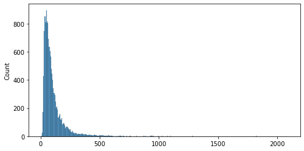
## What would be an approx cutoff for outliers?
sns.boxplot(seq_lens)
/opt/anaconda3/envs/learn-env-new/lib/python3.8/site-packages/seaborn/_decorators.py:36: FutureWarning: Pass the following variable as a keyword arg: x. From version 0.12, the only valid positional argument will be `data`, and passing other arguments without an explicit keyword will result in an error or misinterpretation.
warnings.warn(
<AxesSubplot:>
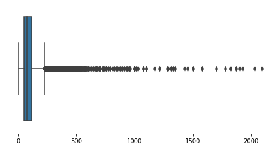
## Defining a max sequence length
MAX_SEQUENCE_LENGTH = 100
MAX_SEQUENCE_LENGTH
100
## Plot our cutoff
## visualize distribution of lengthsw
ax = sns.histplot(seq_lens)
ax.axvline(MAX_SEQUENCE_LENGTH)
<matplotlib.lines.Line2D at 0x7feedbe32130>
## pad X_train_seq and X_test_seq
X_train_pad = sequence.pad_sequences(X_train_seq,MAX_SEQUENCE_LENGTH)
X_test_pad = sequence.pad_sequences(X_test_seq, MAX_SEQUENCE_LENGTH)
seq_lens = [len(x) for x in X_test_pad]
seq_lens[:10]
[100, 100, 100, 100, 100, 100, 100, 100, 100, 100]
Making Our Neural Networks#
## Set the max words equal to tokenizer's word index
MAX_WORDS = len(tokenizer.word_index)
MAX_WORDS
100277
## Save num classes for final layer
n_classes = y_train.shape[1]
n_classes
2
Fitting Our First Model#
EMBEDDING_SIZE
50
def make_model():
"""Make a neural network with a new emebdding layer,
an LSTM layer with 25 unit, and a final Dense layer appropriate for the task"""
model = models.Sequential()
model.add(layers.Embedding(MAX_WORDS+1, EMBEDDING_SIZE))
model.add(layers.LSTM(25, return_sequences=False))
model.add(layers.Dense(n_classes, activation='softmax'))
model.compile(loss='categorical_crossentropy', optimizer='adam',
metrics=['accuracy', tf.keras.metrics.Recall(name='recall')])
display(model.summary())
return model
%%time
## make model and fit
model= make_model()
history = model.fit(X_train_pad, y_train, batch_size=256, epochs=3,validation_split=0.2,
workers=-1)
Model: "sequential"
_________________________________________________________________
Layer (type) Output Shape Param #
=================================================================
embedding (Embedding) (None, None, 50) 5013900
_________________________________________________________________
lstm (LSTM) (None, 25) 7600
_________________________________________________________________
dense (Dense) (None, 2) 52
=================================================================
Total params: 5,021,552
Trainable params: 5,021,552
Non-trainable params: 0
_________________________________________________________________
None
Epoch 1/3
99/99 [==============================] - 14s 120ms/step - loss: 0.6079 - accuracy: 0.6764 - recall: 0.6764 - val_loss: 0.3846 - val_accuracy: 0.8327 - val_recall: 0.8327
Epoch 2/3
99/99 [==============================] - 11s 108ms/step - loss: 0.3057 - accuracy: 0.8772 - recall: 0.8772 - val_loss: 0.3631 - val_accuracy: 0.8478 - val_recall: 0.8478
Epoch 3/3
99/99 [==============================] - 10s 106ms/step - loss: 0.2006 - accuracy: 0.9276 - recall: 0.9276 - val_loss: 0.3768 - val_accuracy: 0.8429 - val_recall: 0.8429
CPU times: user 1min 48s, sys: 50.3 s, total: 2min 38s
Wall time: 35.2 s
Model Evaluation Functions#
Below I broke down the larger evaluation function introduced in study group last week. - I’ve created several helper functions to simplify the code for the evaluation function. - Additionally, we can now use those smaller functions when we don’t need a full model evaluation
### BREAKING OUR BIG FUNCTION UP INTO HELPER FUNCTIONS
def plot_history(history,model,figsize=(8,4)):
"""Takes a keras history and model and plots
all metrics in separate plots for each metric"""
# print(header,'\t[i] MODEL HISTORY',header,sep='\n')
## Make a dataframe out of history
res_df = pd.DataFrame(history.history)#.plot()
## Plot Losses
plot_kws = dict(marker='o',ls=':',lw=2,figsize=figsize)
## Plot all metrics
metrics_list = model.metrics_names
for metric in metrics_list:
ax = res_df[[col for col in res_df.columns if metric in col]].plot(**plot_kws)
ax.set(xlabel='Epoch',ylabel=metric,title=metric)
ax.grid()
ax.xaxis.set_major_locator(mpl.ticker.MaxNLocator(integer=True))
plt.show()
## testing function
plot_history(history, model)
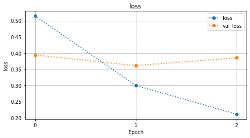
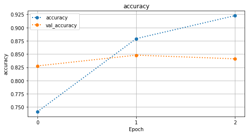
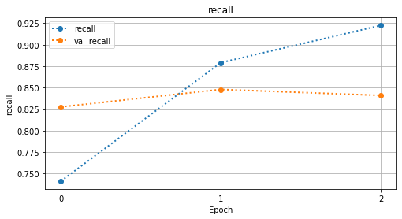
def evaluate_scores(model,X_train,y_train,label='Training',verbose=0):
"""Evaluates a keras model and prints the scores using the provided label."""
train_scores = model.evaluate(X_train,y_train,verbose=verbose)#score()
for i,metric in enumerate(model.metrics_names):
print(f"\t{label} {metric}: {train_scores[i]:.3f}")
evaluate_scores(model, X_train_pad,y_train,verbose=1)
evaluate_scores(model, X_test_pad,y_test,verbose=1,label='Test')
985/985 [==============================] - 9s 9ms/step - loss: 0.1964 - accuracy: 0.9315 - recall: 0.9315
Training loss: 0.196
Training accuracy: 0.931
Training recall: 0.931
422/422 [==============================] - 6s 13ms/step - loss: 0.3750 - accuracy: 0.8501 - recall: 0.8501
Test loss: 0.375
Test accuracy: 0.850
Test recall: 0.850
def classification_report_cm(model, X_train,y_train,label='TRAINING DATA',
cm_figsize=(6,6),normalize='true',cmap='Greens'):
"""Gets predictions from a Keras neural network and get
classification report and confusion matrix."""
## Print report header, get preds, get class report, and conf matrix
header = '==='*24
print(header,f"\t[i] CLASSIFICATION REPORT - {label}",header,sep='\n')
print()
## Get predictions
y_hat_train = model.predict(X_train)
## convert to 1D targets
y_train_class =y_train.argmax(axis=1)
y_hat_train_class = y_hat_train.argmax(axis=1)
## Get classification report
print(metrics.classification_report(y_train_class,y_hat_train_class))
print()
## Plot the confusion Matrix
cm = metrics.confusion_matrix(y_train_class, y_hat_train_class,
normalize=normalize)
fig,ax = plt.subplots(figsize=cm_figsize)
sns.heatmap(cm, cmap=cmap, annot=True,square=True,ax=ax)
ax.set(ylabel='True Class',xlabel='Predicted Class',
title='Confusion Matrix - Training Data')
plt.show()
classification_report_cm(model,X_test_pad, y_test, label='TEST DATA')
========================================================================
[i] CLASSIFICATION REPORT - TEST DATA
========================================================================
precision recall f1-score support
0 0.90 0.88 0.89 9098
1 0.76 0.80 0.78 4402
accuracy 0.85 13500
macro avg 0.83 0.84 0.83 13500
weighted avg 0.85 0.85 0.85 13500
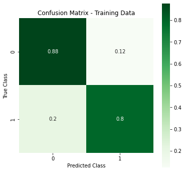
def evaluate_network(model, X_test, y_test, history=None,
X_train = None, y_train = None,
history_figsize = (8,4), cm_figsize=(8,8),
cmap='Greens', normalize='true'):
"""Gets predictions and evaluates a classification model using
sklearn.
Args:
model (classifier): a fit keras classification model.
X_test (tensor/array): X data
y_test (tensor/array): y data
history (History object): model history from .fit
X_train (tensor/array): If provided, compare model.score
for train and test. Defaults to None.
y_train (Series or Array, optional): If provided, compare model.score
for train and test. Defaults to None.
history_figsize (tuple): figsize for each metric's history plot.
cm_figsize (tuple): figsize for confusion matrix plot
cmap (str, optional): Colormap for confusion matrix. Defaults to 'Greens'.
normalize (str, optional): normalize argument for plot_confusion_matrix.
Defaults to 'true'.
"""
header = '==='*24
## First, Plot History, if provided.
if history is not None:
print(header,'\t[i] MODEL HISTORY',header,sep='\n')
plot_history(history,model,figsize=history_figsize)
## Evaluate Network for loss/acc scores
print(header,"\t[i] EVALUATING MODEL",header,sep='\n')
print()
if X_train is not None:
try:
evaluate_scores(model,X_train,y_train,label='Training')
print()
except Exception as e:
print("Error evaluating for accuracy for training data:")
print(e)
## Evaluate test data
evaluate_scores(model,X_test,y_test,label='Test')
print("\n")
## Report for training data
if X_train is not None:
classification_report_cm(model, X_train, y_train, cmap=cmap,
normalize=normalize,
label='TRAINING DATA',cm_figsize=cm_figsize)
print('\n'*2)
## Report for test data
classification_report_cm(model,X_test,y_test, cmap=cmap,
normalize=normalize,
label='TEST DATA',cm_figsize=cm_figsize)
## make,fit model and evlaute
model = make_model()
history = model.fit(X_train_pad, y_train, epochs=3,
batch_size=128, validation_split=0.2,
workers=-1)
evaluate_network(model,X_test_pad,y_test,history,
X_train = X_train_pad,y_train=y_train)
Model: "sequential_4"
_________________________________________________________________
Layer (type) Output Shape Param #
=================================================================
embedding_4 (Embedding) (None, None, 50) 5013900
_________________________________________________________________
lstm_4 (LSTM) (None, 25) 7600
_________________________________________________________________
dense_4 (Dense) (None, 2) 52
=================================================================
Total params: 5,021,552
Trainable params: 5,021,552
Non-trainable params: 0
_________________________________________________________________
None
Epoch 1/3
197/197 [==============================] - 37s 167ms/step - loss: 0.5427 - accuracy: 0.7214 - recall: 0.7214 - val_loss: 0.3641 - val_accuracy: 0.8437 - val_recall: 0.8437
Epoch 2/3
197/197 [==============================] - 24s 121ms/step - loss: 0.2621 - accuracy: 0.8991 - recall: 0.8991 - val_loss: 0.3638 - val_accuracy: 0.8451 - val_recall: 0.8451
Epoch 3/3
197/197 [==============================] - 23s 118ms/step - loss: 0.1754 - accuracy: 0.9372 - recall: 0.9372 - val_loss: 0.3837 - val_accuracy: 0.8384 - val_recall: 0.8384
========================================================================
[i] MODEL HISTORY
========================================================================
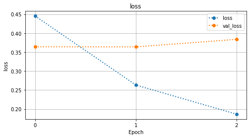
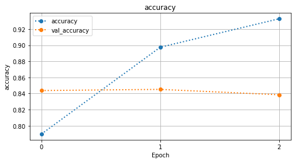
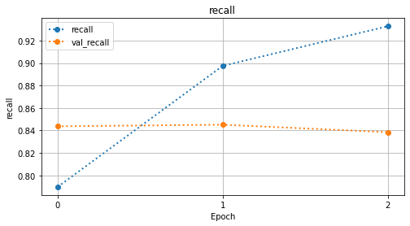
========================================================================
[i] EVALUATING MODEL
========================================================================
Training loss: 0.184
Training accuracy: 0.939
Training recall: 0.939
Test loss: 0.374
Test accuracy: 0.847
Test recall: 0.847
========================================================================
[i] CLASSIFICATION REPORT - TRAINING DATA
========================================================================
precision recall f1-score support
0 0.95 0.96 0.95 20902
1 0.91 0.90 0.91 10598
accuracy 0.94 31500
macro avg 0.93 0.93 0.93 31500
weighted avg 0.94 0.94 0.94 31500
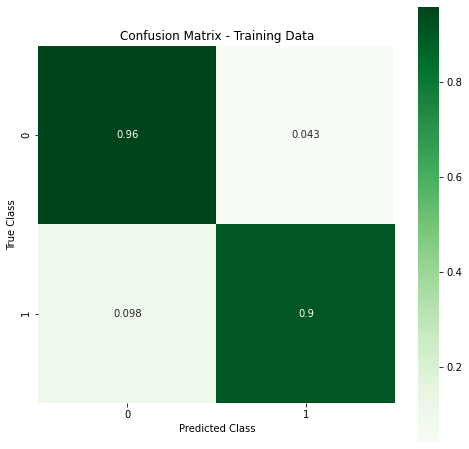
========================================================================
[i] CLASSIFICATION REPORT - TEST DATA
========================================================================
precision recall f1-score support
0 0.88 0.89 0.89 9098
1 0.77 0.75 0.76 4402
accuracy 0.85 13500
macro avg 0.83 0.82 0.82 13500
weighted avg 0.85 0.85 0.85 13500
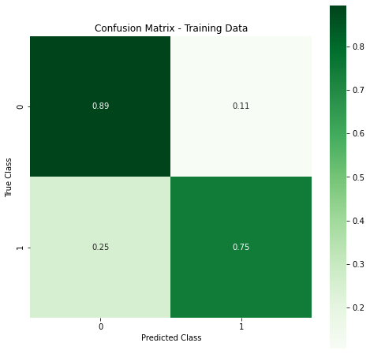
Q: Whats one thing we haven’t addressed, as part of classification-modeling workflow? - Dealing with class imbalance/
Compute Class Weights#
## check class balance
y_tr_classes = pd.Series(y_train.argmax(axis=1))
y_tr_classes.value_counts(1)
0 0.663556
1 0.336444
dtype: float64
Neural networks accept class weights, but cannot calculate them like sklearn models that accept
class_weight="balanced". - We can use sklearn’s function to calculate the class weights to use in our neural netowork
from sklearn.utils.class_weight import compute_class_weight
## Get the array of weights for each unique class
weights= compute_class_weight(
'balanced',
np.unique(y_tr_classes),
y_tr_classes)
weights
/opt/anaconda3/envs/learn-env-new/lib/python3.8/site-packages/sklearn/utils/validation.py:67: FutureWarning: Pass classes=[0 1], y=0 0
1 1
2 0
3 1
4 0
..
31495 0
31496 0
31497 0
31498 0
31499 1
Length: 31500, dtype: int64 as keyword args. From version 0.25 passing these as positional arguments will result in an error
warnings.warn("Pass {} as keyword args. From version 0.25 "
array([0.75351641, 1.48612946])
## Turn the weights into a dict with the class name as the key
weights_dict = dict(zip( np.unique(y_tr_classes),weights))
weights_dict
{0: 0.753516409912927, 1: 1.486129458388375}
## make,fit model and evlaute
model = make_model()
history = model.fit(X_train_pad, y_train, epochs=3,
batch_size=128, validation_split=0.2,
workers=-1,class_weight=weights_dict)
evaluate_network(model,X_test_pad,y_test,history,
X_train = X_train_pad,y_train=y_train)
Model: "sequential_5"
_________________________________________________________________
Layer (type) Output Shape Param #
=================================================================
embedding_5 (Embedding) (None, None, 50) 5013900
_________________________________________________________________
lstm_5 (LSTM) (None, 25) 7600
_________________________________________________________________
dense_5 (Dense) (None, 2) 52
=================================================================
Total params: 5,021,552
Trainable params: 5,021,552
Non-trainable params: 0
_________________________________________________________________
None
Epoch 1/3
197/197 [==============================] - 25s 118ms/step - loss: 0.5641 - accuracy: 0.7246 - recall: 0.7246 - val_loss: 0.4056 - val_accuracy: 0.8257 - val_recall: 0.8257
Epoch 2/3
197/197 [==============================] - 22s 113ms/step - loss: 0.2676 - accuracy: 0.8947 - recall: 0.8947 - val_loss: 0.3905 - val_accuracy: 0.8289 - val_recall: 0.8289
Epoch 3/3
197/197 [==============================] - 31s 160ms/step - loss: 0.1778 - accuracy: 0.9336 - recall: 0.9336 - val_loss: 0.4019 - val_accuracy: 0.8335 - val_recall: 0.8335
========================================================================
[i] MODEL HISTORY
========================================================================
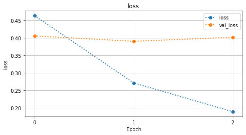
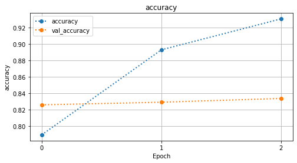
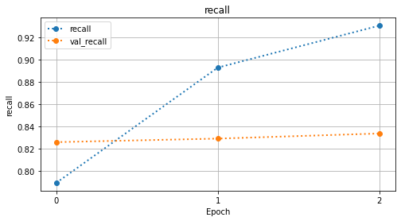
========================================================================
[i] EVALUATING MODEL
========================================================================
Training loss: 0.191
Training accuracy: 0.936
Training recall: 0.936
Test loss: 0.393
Test accuracy: 0.842
Test recall: 0.842
========================================================================
[i] CLASSIFICATION REPORT - TRAINING DATA
========================================================================
precision recall f1-score support
0 0.97 0.94 0.95 20902
1 0.88 0.93 0.91 10598
accuracy 0.94 31500
macro avg 0.92 0.93 0.93 31500
weighted avg 0.94 0.94 0.94 31500
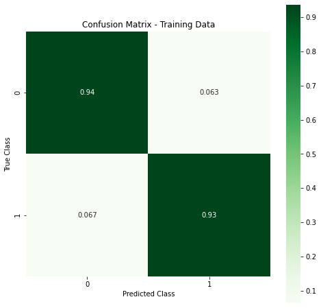
========================================================================
[i] CLASSIFICATION REPORT - TEST DATA
========================================================================
precision recall f1-score support
0 0.90 0.86 0.88 9098
1 0.73 0.81 0.77 4402
accuracy 0.84 13500
macro avg 0.82 0.83 0.82 13500
weighted avg 0.85 0.84 0.84 13500
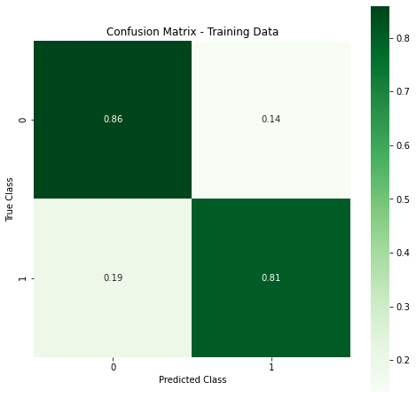
Using our Previously Trained Word2Vec Embeddings in an Embedding Layer#
## Saving the total number of words as vocab size
vocab_size = len(tokenizer.index_word)
## Doubel check current embedding size and vocab size
vocab_size, EMBEDDING_SIZE
(100277, 50)
### make a metrix of embedding weights
embedding_matrix = np.zeros((vocab_size+1, EMBEDDING_SIZE))
## for each item in the word index
for word, i in tokenizer.word_index.items():
## if word in w2vec model, fill in the embedding matrix
if word in wv:
embedding_vector = wv[word]
embedding_matrix[i] = embedding_vector
embedding_matrix
array([[ 0. , 0. , 0. , ..., 0. ,
0. , 0. ],
[ 0.0074465 , -0.54462332, -0.33963847, ..., 1.31179988,
-1.46309865, -0.22636278],
[ 1.27100956, -1.35800886, -0.30397868, ..., 0.41900718,
-2.12314725, 0.54606313],
...,
[ 0. , 0. , 0. , ..., 0. ,
0. , 0. ],
[ 0. , 0. , 0. , ..., 0. ,
0. , 0. ],
[ 0. , 0. , 0. , ..., 0. ,
0. , 0. ]])
## Make a keras embedding layer with emebdding_matrix
embedding_layer = layers.Embedding(vocab_size+1,EMBEDDING_SIZE,
weights=[embedding_matrix],
input_length=MAX_SEQUENCE_LENGTH,
trainable=False)
## update our make_model_w2v func wth embedding layer
def make_w2v_model():
"""Make a neural network with a new emebdding layer,
an LSTM layer with 25 unit, and a final Dense layer appropriate for the task"""
model = models.Sequential()
embedding_layer = layers.Embedding(vocab_size+1,EMBEDDING_SIZE,
weights=[embedding_matrix],
input_length=MAX_SEQUENCE_LENGTH,
trainable=False)
model.add(embedding_layer)
# model.add(layers.Embedding(MAX_WORDS+1, EMBEDDING_SIZE))
model.add(layers.LSTM(25, return_sequences=False))
model.add(layers.Dense(n_classes, activation='softmax'))
model.compile(loss='categorical_crossentropy', optimizer='adam',
metrics=['accuracy', tf.keras.metrics.Recall(name='recall')])
display(model.summary())
return model
## make,fit model and evlaute
model = make_w2v_model()
history = model.fit(X_train_pad, y_train, epochs=3,
batch_size=128, validation_split=0.2,
workers=-1,class_weight=weights_dict)
evaluate_network(model,X_test_pad,y_test,history,
X_train = X_train_pad,y_train=y_train)
Overview - Neural Network Tuning#
Helpful Resources#
Rules of Thumb for Training Neural Networks#
Always use a train-test-validation split.
Train-test-val splits:
Training set: for training the algorithm
Validation set: used during training
Testing set: after choosing the final model, use the test set for an unbiased estimate of performance.
Set sizes:
With big data, your val and test sets don’t necessarily need to be 20-30% of all the data.
You can choose test and hold-out sets that are of size 1-5%.
eg. 96% train, 2% hold-out, 2% test set.
Consider using a
np.random.seedfor reproducibility/comparing modelsUse cross validation of some sort to compare Networks
Normalize/Standardize features
Add EarlyStopping and ModelCheckpoint callbacks
Dealing with Bias/Variance#
Balancing Bias/Variance:
High Bias models are underfit
High Variance models are overfit
Rules of thumb re: bias/variance trade-off:
High Bias? (training performance) |
high variance? (validation performance) |
|---|---|
Use a bigger network |
More data |
Train longer |
Regularization |
Look for other existing NN architextures |
Look for other existing NN architextures |
Rules of Thumb - Hyperparameters to Tune#
This section is partially based on the blog post below.
However, I ordered the steps with my recommended order of importance/what-to-tune-first
Hyperparameters#
Note: outline below is meant for Dense layers but will also generally be true for other layer types.
Number of layers (depends on the size of training data)
Number of neurons(depends on the size of training data)
Activation functions
Popular choices:
relu / leaky-relu
sigmoid / tanh (for shallow networks)
Optimizer:
Popular choices:
SGD (works well for shallow but gets stuck in local minima/saddle-points - if so use RMSProp)
RMSProp
Adam (general favorite)
Learning Rate
Try in powers of 10 (0.001,0.01,.1,1.0)
Which optimizer changes which l.r. is best (but try the others too).
SGD: 0.1
Adam: 0.001/0.01
Can use the
decayparameter to reduce learning (though it is better to use adaptive optimizer than to adjust this)/.
Batch Size
Finding the “right” size is important
Too small = weights update too quickly and convergence is difficult
Too large = weights update too slowly (plus PC RAM issues)
Try batch sizes that are powers of 2 (for memory optimization)
Larger is better than smaller.
Number of Epochs:
Important parameter to tune
Use EarlyStopping callback to prevent overfitting
Adding Dropout
Usually use dropout rate of 0.2 to 0.5
Adding regularization (L1,L2)
Use when the model continues to over-fit even after adding Dropout
Initialization
Not as important as defaults (glorot-uniform) work well, but:
Use He-normal/uniform initialization when using ReLu
Use Glorot-normal/uniform when using Sigmoid
Avoid using all zeros or any constant for all neurons
Easy-to-Add options to fight overfitting#
Dropout#

Early Stopping#
Monitor performance for decrease or plateau in performance, terminate process when given criteria is reached.
In Keras:
Can be applied using the callbacks function
from keras.callbacks import EarlyStopping
EarlyStopping(monitor='val_err', patience=5)
- 'Monitor' denotes quanitity to check
- 'val_err' denotes validation error
- 'pateience' denotes # of epochs without improvement before stopping.
- Be careful, as sometimes models _will_ continue to improve after a stagnant period
Hyperparameter Details#
Kernel Initialization#
Kernel Initializers
# define the grid search parameters
init_mode = ['uniform', 'lecun_uniform', 'normal', 'zero',
'glorot_normal', 'glorot_uniform', 'he_normal', 'he_uniform']```
#### Loss Functions
- MSE (regression)
- categorical cross-entropy (classification with 2D labels )
- sparse categorical cross entropy (classification with 1D labels)
- binary cross-entropy (classification)
- 2 categories
- **can also uses custom scoring functions**
Using Regularization#
L1 & L2 Regularlization#
These methods of regularizaiton do so by penalizing coefficients(regression) or weights(neural networks),
L1 & L2 exist in regression models as well. There, L1=’Lasso Regressions’ , L2=’Ridge regression’
L1 Regularization: $\( Cost function = Loss + \frac{\lambda}{2m} * \sum ||w||\)$
Uses the absolute value of weights and may reduce the weights down to 0.
L2 Regularization:: $\( Cost function = Loss + \frac{\lambda}{2m} * \sum ||w||^2\)$
Also known as weight decay, as it forces weights to decay towards zero, but never exactly 0..
L1/L2 Regularization#
CHOOSING L1 OR L2:
L1 is very useful when trying to compress a model. (since weights can decreae to 0)
L2 is generally preferred otherwise.
USING L1/L2 IN KERAS:
Add a kernel_regulaizer to a layer.
from keras import regularizers
model.add(Dense(64, input_dim=64, kernel_regularizer=regularizers.l2(0.01))
- here 0.01 = $\lambda$
Activity Part 2: Tuning Our Neural Network#
Adding Callbacks#
Keras Callbacks#
CallBacks You’ll Definitely Want to Use
tensorflow.keras.callbacks.EarlyStopping[ALWAYS!]tensorflow.keras.callbacks.ModelCheckpoint[Always, if on Colab]Callbacks worth further exploration
tensorflow.keras.callbacks.callbacks.LearningRateSchedulerMay be outdated in tf 2.x
## import callbacks
from tensorflow.keras.callbacks import ModelCheckpoint, EarlyStopping, CSVLogger
## Make folder for models
model_folder = './models/'
os.makedirs(model_folder,exist_ok=True)
os.listdir(model_folder)
['variables', 'saved_model.pb', 'assets']
## make checkpoints - early stopping and modelcheckpoint
early_stop = EarlyStopping(monitor='val_accuracy',patience=2,verbose=1,
restore_best_weights=False)
checkpoint = ModelCheckpoint(model_folder,verbose=0,save_best_only=True)
### You can use {} to insert values in your checkpoint names
# filepath=folder+"weights-improvement-{epoch:02d}-{val_loss:.2f}.hdf5"
# checkpoint = ModelCheckpoint(filepath,verbose=1,save_best_only=True,
# save_weights_only=True)
## paste in our prior model function and fitting/eval code, but add callbacks
## update our make_model_w2v func wth embedding layer
def make_w2v_model():
"""Make a neural network with a new emebdding layer,
an LSTM layer with 25 unit, and a final Dense layer appropriate for the task"""
model = models.Sequential()
embedding_layer = layers.Embedding(vocab_size+1,EMBEDDING_SIZE,
weights=[embedding_matrix],
input_length=MAX_SEQUENCE_LENGTH,
trainable=False)
model.add(embedding_layer)
model.add(layers.LSTM(25, return_sequences=False))
model.add(layers.Dense(n_classes, activation='softmax'))
model.compile(loss='categorical_crossentropy', optimizer='adam',
metrics=['accuracy', tf.keras.metrics.Recall(name='recall')])
display(model.summary())
return model
## make,fit model and evlaute
model = make_w2v_model()
history = model.fit(X_train_pad, y_train, epochs=5,
batch_size=128, validation_split=0.2,
workers=-1,class_weight=weights_dict,callbacks=[early_stop])
evaluate_network(model,X_test_pad,y_test,history,
X_train = X_train_pad,y_train=y_train)
Model: "sequential_8"
_________________________________________________________________
Layer (type) Output Shape Param #
=================================================================
embedding_10 (Embedding) (None, 100, 50) 5013900
_________________________________________________________________
lstm_8 (LSTM) (None, 25) 7600
_________________________________________________________________
dense_8 (Dense) (None, 2) 52
=================================================================
Total params: 5,021,552
Trainable params: 7,652
Non-trainable params: 5,013,900
_________________________________________________________________
None
Epoch 1/5
197/197 [==============================] - 11s 46ms/step - loss: 0.6275 - accuracy: 0.6136 - recall: 0.6136 - val_loss: 0.4232 - val_accuracy: 0.8130 - val_recall: 0.8130
Epoch 2/5
197/197 [==============================] - 9s 44ms/step - loss: 0.4277 - accuracy: 0.8136 - recall: 0.8136 - val_loss: 0.4101 - val_accuracy: 0.8205 - val_recall: 0.8205
Epoch 3/5
197/197 [==============================] - 8s 42ms/step - loss: 0.3866 - accuracy: 0.8353 - recall: 0.8353 - val_loss: 0.3929 - val_accuracy: 0.8310 - val_recall: 0.8310
Epoch 4/5
197/197 [==============================] - 9s 45ms/step - loss: 0.3715 - accuracy: 0.8412 - recall: 0.8412 - val_loss: 0.4274 - val_accuracy: 0.8086 - val_recall: 0.8086
Epoch 5/5
197/197 [==============================] - 9s 45ms/step - loss: 0.3504 - accuracy: 0.8478 - recall: 0.8478 - val_loss: 0.3830 - val_accuracy: 0.8346 - val_recall: 0.8346
========================================================================
[i] MODEL HISTORY
========================================================================
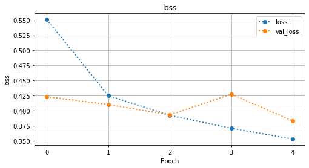
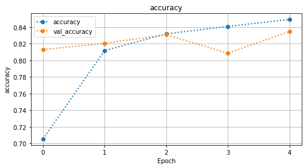
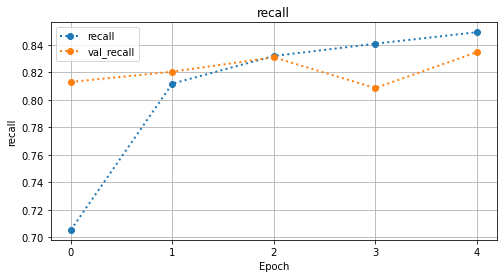
========================================================================
[i] EVALUATING MODEL
========================================================================
Training loss: 0.352
Training accuracy: 0.850
Training recall: 0.850
Test loss: 0.380
Test accuracy: 0.836
Test recall: 0.836
========================================================================
[i] CLASSIFICATION REPORT - TRAINING DATA
========================================================================
precision recall f1-score support
0 0.93 0.83 0.88 20902
1 0.73 0.88 0.80 10598
accuracy 0.85 31500
macro avg 0.83 0.86 0.84 31500
weighted avg 0.86 0.85 0.85 31500
========================================================================
[i] CLASSIFICATION REPORT - TEST DATA
========================================================================
precision recall f1-score support
0 0.92 0.82 0.87 9098
1 0.70 0.86 0.77 4402
accuracy 0.84 13500
macro avg 0.81 0.84 0.82 13500
weighted avg 0.85 0.84 0.84 13500
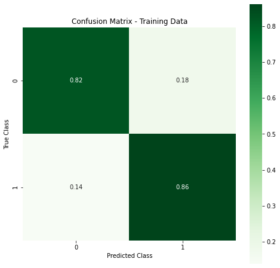
Gridsearching with Keras & Scikit-Learn#
HyperParameter Tuning with GridSearchCV & Keras#
Original Source: https://chrisalbon.com/deep_learning/keras/tuning_neural_network_hyperparameters/
To use
GridSearchCVor other similar functions in scikit-learn with a Keras neural network, we need to wrap our keras model inkeras.wrappers.scikit_learn’sKerasClassifierandKerasRegressor.
To do this, we need to write a build function(
build_fn) that creates our model such ascreate_model.This function must accept whatever parameters you wish to tune.
It also must have a default argument for each parameter.
This function must Return the model (and only the model)
We then create out model using the Keras wrapper:
from tensorflow.keras.wrappers.scikit_learn import KerasClassifier
neural_network = KerasClassifier(build_fn=create_model,verbose=1)
Now, set up the hyperparameter space for grid search. (Remember, your
create_modelfunction must accept the parameter you want to tune)
params_to_test = {'n_units':[(50,25,7),(100,50,7)],
'optimizer':['adam','rmsprop','adadelta'],
'activation':['linear','relu','tanh'],
'final_activation':['softmax']}
Now instantiate your GridSearch function
from sklearn.model_selection import GridSearchCV
grid = GridSearchCV(estimator=neural_network,param_grid=params_to_test)
grid_result = grid.fit(X_train, y_train)
best_params = grid_result.best_params_
And thats it!
from tensorflow.keras.wrappers.scikit_learn import KerasClassifier
from sklearn.model_selection import GridSearchCV
# make a new make_tune_model function to tune the # of units
# and if embeddings are trainable
def make_tune_model(n_units_lstm=25, trainable=False):
"""Make a neural network with a new emebdding layer,
an LSTM layer with 25 unit, and a final Dense layer appropriate for the task"""
model = models.Sequential()
embedding_layer = layers.Embedding(vocab_size+1,EMBEDDING_SIZE,
weights=[embedding_matrix],
input_length=MAX_SEQUENCE_LENGTH,
trainable=trainable)
model.add(embedding_layer)
model.add(layers.LSTM(n_units_lstm, return_sequences=False))
model.add(layers.Dense(n_classes, activation='softmax'))
model.compile(loss='categorical_crossentropy', optimizer='adam',
metrics=['accuracy', tf.keras.metrics.Recall(name='recall')])
display(model.summary())
return model
# ## make a model with sklearn wrapper
# wrapped_model = KerasClassifier(make_tune_model)
# wrapped_model.fit(X_train_pad,y_train,
# epochs=3, validation_split=0.2)
## make anew early stopping with shorter patience, do not restore best weights
early_stop = EarlyStopping(monitor='val_accuracy',patience=0,verbose=1,
restore_best_weights=False)
## Set up params grid for 25,509 units and trianable true/false
## Set up params grid for 25,509 units and trianable true/false
params = {'n_units_lstm':[25,50],
'trainable':[True,False]}
## Make and fit grid, check best params
grid = GridSearchCV(KerasClassifier(make_tune_model),
params,cv=2,n_jobs=-1,verbose=1)
grid.fit(X_train_pad,y_train, epochs=3,
callbacks=[early_stop],
validation_split=0.2)
grid.best_params_
Fitting 2 folds for each of 4 candidates, totalling 8 fits
[Parallel(n_jobs=-1)]: Using backend LokyBackend with 12 concurrent workers.
[Parallel(n_jobs=-1)]: Done 3 out of 8 | elapsed: 10.5s remaining: 17.5s
[Parallel(n_jobs=-1)]: Done 8 out of 8 | elapsed: 10.5s finished
Model: "sequential_10"
_________________________________________________________________
Layer (type) Output Shape Param #
=================================================================
embedding_12 (Embedding) (None, 100, 50) 5013900
_________________________________________________________________
lstm_10 (LSTM) (None, 25) 7600
_________________________________________________________________
dense_10 (Dense) (None, 2) 52
=================================================================
Total params: 5,021,552
Trainable params: 5,021,552
Non-trainable params: 0
_________________________________________________________________
None
Epoch 1/3
788/788 [==============================] - 81s 97ms/step - loss: 0.5023 - accuracy: 0.7508 - recall: 0.7508 - val_loss: 0.3913 - val_accuracy: 0.8268 - val_recall: 0.8268
Epoch 2/3
788/788 [==============================] - 91s 116ms/step - loss: 0.3369 - accuracy: 0.8619 - recall: 0.8619 - val_loss: 0.3685 - val_accuracy: 0.8363 - val_recall: 0.8363
Epoch 3/3
788/788 [==============================] - 94s 119ms/step - loss: 0.2771 - accuracy: 0.8889 - recall: 0.8889 - val_loss: 0.3547 - val_accuracy: 0.8527 - val_recall: 0.8527
{'n_units_lstm': 25, 'trainable': True}
## whats the best score?
best_ann = grid.best_estimator_
history = best_ann.fit(X_train_pad,y_train, epochs=3,
callbacks=[early_stop],
validation_split=0.2)
best_ann.model
<tensorflow.python.keras.engine.sequential.Sequential at 0x7f91d3b76df0>
evaluate_network(best_ann.model,X_test_pad,y_test,history=history,
X_train=X_train_pad,y_train = y_train)
========================================================================
[i] MODEL HISTORY
========================================================================
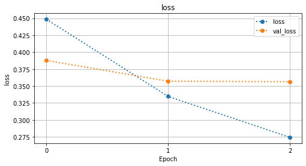
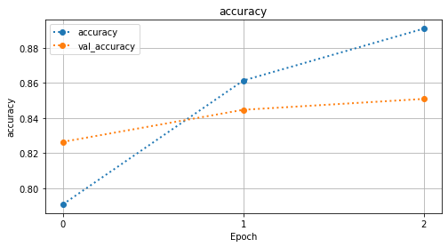
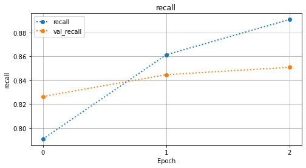
========================================================================
[i] EVALUATING MODEL
========================================================================
Training loss: 0.251
Training accuracy: 0.903
Training recall: 0.903
Test loss: 0.344
Test accuracy: 0.854
Test recall: 0.854
========================================================================
[i] CLASSIFICATION REPORT - TRAINING DATA
========================================================================
precision recall f1-score support
0 0.91 0.95 0.93 20902
1 0.89 0.81 0.85 10598
accuracy 0.90 31500
macro avg 0.90 0.88 0.89 31500
weighted avg 0.90 0.90 0.90 31500
========================================================================
[i] CLASSIFICATION REPORT - TEST DATA
========================================================================
precision recall f1-score support
0 0.87 0.92 0.89 9098
1 0.81 0.72 0.76 4402
accuracy 0.85 13500
macro avg 0.84 0.82 0.83 13500
weighted avg 0.85 0.85 0.85 13500
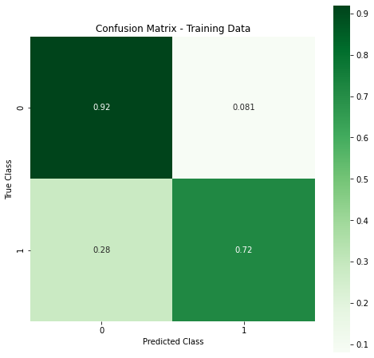
raise Exception('The following cells are not guaranteed to run!')
APPENDIX#
Tensorboard Callback#
Add tensorboard callback
%load_ext tensorboard
logdir = './logs/'
os.makedirs(logdir,exist_ok=True)
tensorboard_callback = tf.keras.callbacks.TensorBoard(logdir, histogram_freq=1)
## Test using function to train and evaluate
model = make_model()
history = model.fit(X_train_pad, y_train, epochs=3,
batch_size=64, validation_split=0.2,
workers=-1,callbacks=[tensorboard_callback])
evaluate_network(model,X_test_pad,y_test,history,
X_train = X_train_pad,y_train=y_train)
# %tensorboard --logdir logs
LSTM vs GRU#
## GRU Model
from keras import models, layers, optimizers, regularizers
modelG = models.Sequential()
## Get and add embedding_layer
# embedding_layer = ji.make_keras_embedding_layer(wv, X_train)
modelG.add(Embedding(MAX_WORDS, EMBEDDING_SIZE))
# modelG.add(layers.SpatialDropout1D(0.5))
# modelG.add(layers.Bidirectional(layers.GRU(units=100, dropout=0.5, recurrent_dropout=0.2,return_sequences=True)))
modelG.add(layers.Bidirectional(layers.GRU(units=100, dropout=0.5, recurrent_dropout=0.2)))
modelG.add(layers.Dense(2, activation='softmax'))
modelG.compile(loss='categorical_crossentropy',optimizer="adam",metrics=['acc'])#,'val_acc'])#, callbacks=callbacks)
modelG.summary()
history = modelG.fit(X_train, y_train, epochs=10, batch_size=32, validation_split=0.2)
y_hat_test = modelG.predict_classes(X_test)
kg.evaluate_model(y_test,y_hat_test,history)
Using Pre-Trained Vectors#
import os
folder = '/Users/jamesirving/Datasets/'#glove.twitter.27B/'
# print(os.listdir(folder))
glove_file = folder+'glove.6B/glove.6B.50d.txt'#'glove.twitter.27B.50d.txt'
glove_twitter_file = folder+'glove.twitter.27B/glove.twitter.27B.50d.txt'
print(glove_file)
print(glove_twitter_file)
Keeping only the vectors needed#
# ## This line of code for getting all words bugs me
# total_vocabulary = set(word for tweet in data_lower for word in tweet)
# len(total_vocabulary)
# glove = {}
# with open(glove_file,'rb') as f:#'glove.6B.50d.txt', 'rb') as f:
# for line in f:
# parts = line.split()
# word = parts[0].decode('utf-8')
# if word in total_vocabulary:
# vector = np.array(parts[1:], dtype=np.float32)
# glove[word] = vector
# glove['republican']
Converting Glove to Word2Vec format#
Getting glove into w2vec format:
glove_folder = folder+'glove.twitter.27B'
os.listdir(glove_folder)
from gensim.test.utils import datapath, get_tmpfile
from gensim.models import KeyedVectors
from gensim.scripts.glove2word2vec import glove2word2vec
glove_file = datapath(glove_twitter_file)
tmp_file = get_tmpfile(glove_folder+'glove_to_w2vec.txt')
_ = glove2word2vec(glove_file, tmp_file)
model_glove = KeyedVectors.load_word2vec_format(tmp_file)
model_glove.wv
Using Embeddings in Classification Models - sci-kit learn#
Embeddings can be used in Artificial Neural Networks as an input Embedding Layer
Embeddings can be used in sci-kit learn models by taking the mean vector of a text/document and using the mean vector as the input into the model.
Creating Mean Embeddings#
## This line of code for getting all words bugs me
total_vocabulary = set(word for tweet in data_lower for word in tweet)
len(total_vocabulary)
glove = {}
with open(glove_file,'rb') as f:#'glove.6B.50d.txt', 'rb') as f:
for line in f:
parts = line.split()
word = parts[0].decode('utf-8')
if word in total_vocabulary:
vector = np.array(parts[1:], dtype=np.float32)
glove[word] = vector
from sklearn.model_selection import train_test_split
from nltk import word_tokenize
y = pd.get_dummies(df['is_trump'],drop_first=True).values
X = df['text'].str.lower().map(word_tokenize)
X_idx = list(range(len(X)))
train_idx,test_idx = train_test_split(X_idx,random_state=123)
X[train_idx]
def train_test_split_idx(X, y, train_idx,test_idx):
# try count vectorized first
X_train = X[train_idx].copy()
y_train = y[train_idx].copy()
X_test = X[train_idx].copy()
y_test = y[train_idx].copy()
return X_train, X_test,y_train, y_test
X_train, X_test,y_train, y_test = train_test_split_idx(X,y,train_idx,test_idx)
# df['combined_text'] = df['headline'] + ' ' + df['short_description']
# data = df['combined_text'].map(word_tokenize).values
class W2vVectorizer(object):
def __init__(self, w2v):
# Takes in a dictionary of words and vectors as input
self.w2v = w2v
if len(w2v) == 0:
self.dimensions = 0
else:
self.dimensions = len(w2v[next(iter(glove))])
# Note: Even though it doesn't do anything, it's required that this object implement a fit method or else
# it can't be used in a scikit-learn pipeline
def fit(self, X, y):
return self
def transform(self, X):
return np.array([
np.mean([self.w2v[w] for w in words if w in self.w2v]
or [np.zeros(self.dimensions)], axis=0) for words in X])
NLP Task Option 2#
Coronavirus Tweet Sentiment https://www.kaggle.com/datatattle/covid-19-nlp-text-classification
# os.listdir("/Users/jamesirving/Downloads/archive (1)/")
# ### Saving smaller gz file
# corona_df = pd.read_csv('/Users/jamesirving/Downloads/archive (1)/Corona_NLP_train.csv',
# encoding='latin-1')
# corona_df
# os.makedirs('./data/',exist_ok=True)
# corona_df.to_csv('data/cornavirus_tweets.csv.gz',compression='gzip',index=False)
# corona_df = pd.read_csv('data/cornavirus_tweets.csv.gz',
# encoding='latin-1')
# corona_df
# corona_df['Sentiment'].value_counts(1)